chap-installObtaining and Installing Linux
David Bandel rewrote and revised the first section on installing
Linux. Parts of the work by the following authors of the different
sections on Linux distributions were also
added to this first section.
Boris Beletsky wrote the Debian section.
Sean Dreilinger wrote the section on Slackware.
Henry Pierce wrote the section on Red Hat Linux.
Evan Leibovitch wrote the section on Caldera OpenLinux.
Larry Ayers wrote the section on S.u.S.E. Linux.
Generic-installation
Unlike most other operating systems, Linux can be obtained free of charge. Due to the GNU General Public License under which Linux is distributed (see Appendix C), no one can sell you a license for the software. You can use Linux at no charge and are encouraged to make it available to others.
But that doesn't mean companies aren't entitled to reimbursement for copying costs plus a profit. They may also add software that is not free that runs on the system.
This gives you the freedom to choose. If purchasing a CD-ROM is not within your budget, you may simply borrow a friend's copy or download the source from the Internet. Whether purchased from a major Linux distributor or downloaded from their FTP site (see Appendix B), you get the same operating system and the software packages that they offer. In fact, you can get more free software from one of the FTP sites than the companies can distribute on CD, due to restrictions some authors place on the distribution of their software.
An in-depth look at some of the Linux distributions begins on
page  . These distributions are: Debian,
Red Hat, Caldera, Slackware, and S.u.S.E. Each section has more
information on where to obtain that distribution. But remember, Linux
is the kernel. The software is part of the distribution, not
Linux. Most of the software is freely available and can be ported
between various UNIX platforms. After taking into account what the
kernel itself will support, the biggest difference comes in what the
libraries (software called from within the applications) support.
. These distributions are: Debian,
Red Hat, Caldera, Slackware, and S.u.S.E. Each section has more
information on where to obtain that distribution. But remember, Linux
is the kernel. The software is part of the distribution, not
Linux. Most of the software is freely available and can be ported
between various UNIX platforms. After taking into account what the
kernel itself will support, the biggest difference comes in what the
libraries (software called from within the applications) support.
Each distribution has its own installation and maintenance utilities
that ease installation and system administration. Each is apparently
aimed at a different audience. Any distribution will get you started
and keep you running. So I recommend that you read about each
distribution and talk to any knowledgeable friends. Most large cities
have a Linux User Group , most with experienced users, who argue at
length over which distribution is the best, and why. I suggest that
you listen to some of their arguments and then decide. You can also
join mailing lists (I recommend joining only one at a time) and
reading user posts and answers from the list gurus. As different as
each distribution is, so too are the mailing lists that provide
assistance. Making the right choice for yourself is important, because
changing distributions generally means reinstalling from scratch.
, most with experienced users, who argue at
length over which distribution is the best, and why. I suggest that
you listen to some of their arguments and then decide. You can also
join mailing lists (I recommend joining only one at a time) and
reading user posts and answers from the list gurus. As different as
each distribution is, so too are the mailing lists that provide
assistance. Making the right choice for yourself is important, because
changing distributions generally means reinstalling from scratch.
This section makes the assumptions that the average newcomer to Linux:
These assumptions are not extreme, and may even be a bit conservative. Some say that if your VCR still blinks 12:00, Linux isn't for you, but then that would leave me out as well. My VCR still blinks 12:00.
Before we begin, we must know where we are going. While it is certainly possible to get from New York to California (eventually) by striking out in almost any random direction, most of us would opt to go in a more or less direct route. So it is with installing Linux.
This section explains all of the installation steps necessary short of the actual install. Each distribution handles this preparation slightly differently. While the installs look different, they accomplish the same things and have more in common than not. All require:
Now that I've sufficiently oversimplified the process, let's go down the list. Hang on, it's not that bad when you learn from others' mistakes.
I can't overemphasize this step. Any pilot will tell you that the landing is only as good as the approach. The same goes for Linux installation.
First, determine what kind of hardware you have. A checklist has been included to assist you. Be as precise as possible, but don't get carried away. For example, if you have an Ethernet card, you need to know what kind (e.g., SMC-Ultra, 3Com 3C509, etc.), base I/O (e.g., io=0x300), interrupt (IRQ 10), but not the hardware address (00 00 a6 27 bf 3c). Not all information will be needed for your hardware. If you have Windows 95 or Windows NT running, you can copy the values from the system hardware device information screen. Otherwise, consult the hardware manuals or the hardware company's Web site. Since it is important, we'll review this worksheet here.
GeneralProcessor: Type: 386 486 Pentium PPro
Speed (optional):
Mfg:
Intel AMD Cyrix
Motherboard: Make: Chip Set:
Example: Make: unknown Chip Set: triton II
Mouse: Mfg: Type: bus PS/2 serial port
If serial: COM1 (ttyS0) COM2 (ttyS1)
Hard disk drive(s): Type: IDE/MFM/RLL/ESDI SCSI
Size (list each drive):
If SCSI Controller: Make: Model:
Example: Make: BusLogic Model: 948
Boot: Linux DOS/Windows OS/2 Other
Disk: Partition: Size: Boot:
Disk: Partition: Size: Boot:
Disk: Partition: Size: Boot:
Disk: Partition: Size: Boot:
CD-ROM: IDE/ATAPI SCSI Proprietary
Mfg: Model:
(Proprietary only):
X-Windows:
Video Card: Mfg: Model:
RAM: 1Mb 2Mb 4Mb 8Mb 16Mb
Monitor: Mfg: Model: Max scan rate:
Networking:
Modem: Mfg: Model:
Serial port: COM1 COM2 COM3 COM4
(ttyS0) (ttyS1) (ttyS2) (ttyS3)
Computer hostname: Example: rainier
The following answers are only needed if using network interface card (NIC): (do not configure networking if you do not have a NIC installed)
NIC Type: ethernet token ring FDDI other
NIC Mfg: Model:
Network domain name: (Example: mountains.net)
IP Address: (Ex: 192.168.1.2)
Network address: (Ex: 192.168.1.0)
Netmask: (Ex: 255.255.255.0)
Broadcast address: (Ex: 192.168.1.255)
Gateway(s): (Ex: none or 192.168.1.1)
DNS(s): (Ex: 192.168.1.2)
Some of the General Section is there for future reference. Specifically, we don't need to know right now our CPU processor type. We can also do without ever knowing what chip set we have on the motherboard. But if the information is available, it is good to have.
Other information, beginning with the mouse, we do need, if we expect to use the mouse. We need to know the mouse manufacturer, because different brands implement internal signal functions differently. Here, attention to detail is everything. If you have a mouse with a Microsoft brand on it, it may have a serial or PS/2 interface. Looking at the connector for the computer won't help, either. A number of computers come with mice that look like serial mice and have a serial-type connector, but are connected to the motherboard internally as a PS/2 mouse.
Read the print on the bottom of the mouse carefully before deciding. Also, if you have a mouse with three buttons, but it has a switch on the bottom which you can change between, say, Microsoft and PC systems, choose PC system. The Microsoft setting doesn't implement the middle button, which is useful in UNIX. For manufacturer, choose the switch setting, since that is the signaling protocol used. No drivers exist for a "Cutie" mouse, but do exist for the switch settings of Microsoft and Mouse System found on the bottom of the mouse.
While not specifically asked for, the only additional information you may want to add is the device through which the system accesses the mouse. Linux must know how the device is referred to. If you have a PS/2 mouse, you will normally use either /dev/psaux, the auxiliary port for a PS/2 pointing device, or /dev/psmouse, a synonym sometimes available for use. Bus mice are accessed through a file specifically created for that proprietary mouse, like /dev/atibm ATI bus mice, /dev/logibm for Logitech bus mice, /dev/inportbm for InPort bus mice, or their respective synonyms of atimouse, logimouse, and so on. For serial mice, if you know the MS-DOS COM: port, substitute /dev/ttyS0 for COM1: and /dev/ttyS1 for COM2:. I'll refrain from explaining the origins of the tty name of ttyS0 since that will take up several paragraphs and is already explained in many UNIX references
Before you begin installation, you need to take stock of how much hard disk real estate you will dedicate to Linux versus how much you have. Deciding during installation how you want to divide up your hard disk is only asking for problems and will probably end up in lost time, lost data, and a reinstall.
Your hard drive will be one of several kinds. For our purposes, IDE, MFM, RLL, and ESDI are equivalent, and I will use the term IDE. This also encompasses EIDE, the most common interface currently in home computer systems on the market and favored for its low price.
If the hard drive has a SCSI interface, this will be evident during booting. You will need to know the make and model of the SCSI controller. The most common are the Adaptec and BusLogic controllers, but by no means are they the only ones. These also have specific models, like the AHA-1572 or BTC-958. This information is often displayed during system initialization.
To allocate space, we need to assess the hard drive size. Under OS/2, you can use the entire hard disk for OS/2, then install Microsoft Windows on the partition with OS/2 and run Microsoft Windows under OS/2. If you have MS-DOS and Microsoft Windows, or OS/2 on your computer, Linux should have its own partition. It can be loaded on a MS-DOS partition with UMSDOS, which is not covered here. While Linux has DOS emulators and can read and even run some DOS programs, DOS cannot usually ``see'' what is on a Linux partition.
If you have and want to keep MS-DOS (assumed), you must determine how much space to reserve for it. Subtract this number from the hard disk total and that is what you have to work with. For now, annotate the total size of the drive(s) you have and the second number with how much to dedicate to Linux.
For your CD-ROM drive(s) you need similar information. A CD-ROM drive is either IDE/ATAPI, the most common in home systems marketed today; SCSI; or an older, proprietary drive, like those connected to sound cards. If you have an IDE or SCSI drive, so much the better. If you have a proprietary drive, you must know the make and model because Linux identifies proprietary CD-ROM drives by manufacturer and the specific drive.
For newcomers to Linux who are familiar only with MS-DOS, and for those who come from other UNIX platforms, devices under Linux have have peculiar references. These references are used almost from the start, and some understanding of them is necessary.
Under Linux, as under any UNIX, devices are special files. Hard drives are treated as files and are referred to by name, as are modems, your monitor screen, and other hardware devices. UNIX treats them as files to be read from and written to. Since Linux sees them as files, they will all be located in a directory dedicated to devices. After installation you will be able to see them under the directory /dev, for devices.
Even though these devices are seen by Linux as files, they are special. They come in two ``flavors,'' block and character, which refer to the way the device communicates, in blocks of data or individual characters. They are created automatically during installation.
These naming conventions are discussed on
page .
I've included on your worksheet information regarding your video card and monitor. While this is not absolutely necessary, most of those who come from the Microsoft Windows or OS/2 world want to install and configure a graphical user interface (GUI) for use. Some distributions walk you through this set up, others point you to post-installation programs. This information will be important then.
You must know the manufacturer and specific model of your video card. Some cards can be probed for RAM or chip sets, others can't. In either case, knowing how much RAM is on the card and the chips used, like the S3 or S3-Virge, is important. This information saves much time and grief. The most difficult and frustrating part of any Linux installation and setup is the X Window System.
The data for your monitor is often more difficult to obtain. If you have one of the more obscure brands of monitors, you may need to supply vertical and horizontal scan rates yourself.
If in doubt, always err on the conservative side. Overdriving your system can result in damage to the monitor or video card.
We already have most of the information that we need for the mouse,
the only other subsystem the X server needs. The information that
Linux needs to know about your mouse is described on
page .
This section is not as significant yet as the worksheet suggests.
Networking is explained in detail in Chapter . But
if you have a network interface card (NIC), be it Ethernet,
token ring, or other system, you must read up on the card before
proceeding. This information is needed during installation to use the
NIC.
During initial Linux installation, if you do not have a NIC, you can skip over some of the networking part. However, all computers must have a name under Linux. The example on the worksheet assumes you've chosen a theme, like mountains, and will name your computers after names of mountains, but any scheme your concoct is fine.
If you have a modem, you must know where it is connected. This is a serial port, /dev/ttyS0 through /dev/ttyS3, corresponding to MS-DOS COM: ports 1-4. ISDN is treated similarly, but is normally set up post-installation with special, multiple device designations.
That finishes our worksheet and about half of the planning that we need to do. One notation that is not on our worksheet is the amount of random access memory (RAM) the system has. Linux runs happily on a system with less than 4 MB of RAM, but this has a significant impact on installation and subsequent system usage. If you have 4 MB of RAM or less, then you must follow special procedures for low memory machines where applicable. With the current low price of RAM and with few machines being sold today with less than 16MB of RAM, this generally isn't an issue. If it is, be sure to check your distribution for special instructions.
Portions of the following section, particularly the disk partitioning strategies, are highly contentious among seasoned installers, but I will give you my thoughts on it. You are welcome to deviate as you see fit. Most differences in opinion, though, come from a difference in the ultimate purpose for the system; i.e., as a workstation, Web server, News server, or other function.
Few seasoned Linux users will tell you to make one Linux native partition and one swap partition and start installation. There are several reasons for this, and I subscribe to most of them, so I have several Linux native partitions. But to me, the most compelling reason of all, is that one day you will want to upgrade, and that will require reformatting the file system(s). In fact, the Slackware distribution has, at last look, no means to even attempt an ``in-place'' upgrade, or any indication that it will in the future. Upgrading from kernel 0.99 to 1.2.13 required me to reformat, as did the upgrade from 1.2.13 to 2.0.0, and I suspect that another will be required for 2.2.0 (or whatever the next stable kernel is). What I don't ever want to do is lose the files that I have accumulated in my home directory. Yes, I have a backup. But keeping my /home directory intact is easier, especially since I moved all my special files to a subdirectory there.
Another reason is that any bootable partition must be within the first 1024 cylinders of the hard drive. When any PC boots up, a sequence of events occurs which ends in the loading of the operating system. Due to limitations in the BIOS (Basic Input/Output System), until the operating system is loaded, only the first 1024 cylinders of the first or second hard disk can be accessed.
To get a feel for exactly what we're talking about, I'm going to describe a standard Linux file system and how Linux handles partitions.
Under MS-DOS, every partition is a different drive, and little distinction is made between whether that is a physical drive or a logical drive (partition). Under Linux, physical and logical drives are much less rigidly designated.
During installation, you must choose a partition as your root partition. The root partition is designated as ``/''. When we refer to ``/dev'', this is really two directories, ``/'' and ``dev''. Your Linux kernel will be located on the root partition, but can be in a subdirectory as long as that subdirectory resides on the root partition. For example, some distributions use /boot to hold the kernel, system map, and boot up files.
The following structure (as a minimum) will be set up on your root
partition during install:
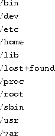
You may see others like /boot, /mnt, /cdrom,
/floppy, /opt, and so on, but the above are essential.
What about other partitions? Linux can use a directory name (say /usr) as a mount point. That is, the other partition on the disk (or on another disk) is mounted under it (in this case /usr).
If you unmount the other partition and look in the subdirectory Linux uses as a mount point, you will (or should) see nothing--no files or directories. When the other partition is mounted, you will see files and directories which are on that partition under the mount point. So if you have two drives, one with 120 MB and another with 840 MB, you can make one partition on the 120MB drive (let's say it's the root partition) and mount any partitions you have created on the 840MB drive (this could be one big partition, or several smaller partitions) under their respective mount points, one partition per mount point, creating, in effect, one, 960-MB file system.
The one restriction is that you cannot use certain directories on the root drive as mount points, because they contain files that are needed to either boot the system or mount other systems. Obviously if the command used to mount other partitions is located on another partition and you can't access that partition until you've mounted it, you'll be like the dog chasing its tail.
The directories you cannot use as mount points are: /bin, /dev, /etc, /lib, /lost+found, /proc, /root, and /sbin.
A detailed description of what files are contained in these standard
system directories is given on page .
Let's look at a small example. You are an aspiring Internet Service Provider (ISP). You have four machines, and each has a 1-gigabyte drive. So, you decide to allocate space as follows:
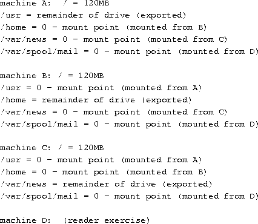
You probably noticed that I arbitrarily assigned the root partition
120MB, and allocated the rest to whatever ( /usr, /home,
/var/spool/mail and so forth). I also didn't allocate any space
to a swap partition. So, let's look at what we will likely need,
understanding that ``it depends,'' is key. I will discuss this from
the perspective of a home situation with only a few users, lots of
programs, and no other remarkable needs.
The best place to start is to tell you what my primary home computer looks like. I have two drives, /dev/hda (1.2 GB) and /dev/hdb (540 MB). df (disk free) displays
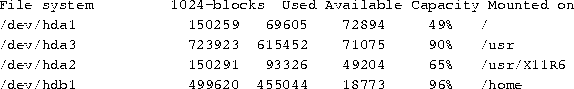
You can see that I have a half-used 150-MB root (/) partition, a
nearly full /usr partition, a largely used /usr/X11R6
partition, and a large, but cramped, 500-MB /home partition. The
remainder of the drive /dev/hdb is a swap partition.
At a realistic minimum, I would suggest reserving 80-100 MB for your root partition, about 10 MB per user on your /home partition, as much space as you can reserve for swap, within reason (see the next section), and the rest to /usr. I have a five-user system at home, but I personally have over 400 MB of the /home directory tied up, much of that in graphics--a photo album of family and friends. Your /usr partition should probably be at least 250 MB, but the minimum will depend on what you decide to install. As you can see, it can rapidly fill with over 800 MB of programs, libraries, and data. Also remember that partitions give you flexibility that you lose with one, giant partition.
You must give thought to a swap partition. Unlike Microsoft Windows, Linux uses a dedicated swap partition for speed. Although it is possible to create a swap file, it is not recommended. Linux can use up to 128 MB of swap space. I recommend a practical minimum of 16 MB. The optimum is probably as much as you can spare between 32 and 64MB--the more, the better.
One last consideration before you decide to how best to carve up the disk. Remember that I said the BIOS cannot ``see'' past sector 1023 on the hard drive (about 512MB). So, the Linux kernel (a file probably called vmlinuz on your boot disk), or any OS kernel for that matter, must reside entirely on one of the first two disk drives ( /dev/hda or /dev/hdb) and within the first 1024 sectors, or the BIOS will be unable to load it. To insure that it can, plan to make your root partition (as well as any other boot partition) fall entirely within this limitation on either the first or second hard drive.
At the beginning of this chapter I said I'd make a few assumptions. One was that you would want to keep your comfortable MS-DOS and Microsoft Windows operating system around. And since the computer you bought only has MS-DOS on it, it doesn't make sense to have multiple partitions, so the one drive you have is probably entirely dedicated to MS-DOS.
One way or another, then, we will have two operating systems on this computer. If you currently have nothing on your disk (lucky you), that is great, but you're not quite ready to skip ahead. Linux is comfortable wherever you put it. Your BIOS may not be capable of booting it, but once running, it will not complain if it's relegated to the fourth partition of the fourth hard drive. But MS-DOS and Microsoft Windows aren't so forgiving. They want the first drive and the first partition and may refuse to boot from any other position. I have seen MS-DOS boot from the first partition on the second hard drive, but the first hard drive did not have any MS-DOS partitions, so MS-DOS didn't recognize the drive. The best strategy is often the path of least resistance. If at all possible, put MS-DOS on the first drive and the first partition.
A second consideration in a multiple OS situation is which operating system to load first. If you're tempted to partition the hard disk and install Linux first (reserving /dev/hda1 for MS-DOS, then installing MS-DOS second, don't. Windows 95 is the worst offender, but Microsoft products in general will delete any previous boot loader you had installed on the master boot record (what the BIOS uses to point to bootable kernels). In fact, you may even hear this referred to as the ``Microsoft virus''. This is not a virus in the true sense of the word, just arrogance on the part of Microsoft, that one would only want a Microsoft operating system to boot. Linux does not cause such problems, and in fact provides a way to choose the default boot image. It also allows you to intervene during the boot process to specify which operating system to boot. This is a standard part of Linux installation procedures.
Before we actually get to work on the partition table, I will walk through procedures to protect the data that you have on the hard disk. These procedures assume that you have a DOS partition. Other operating systems may or may not have a way to accomplish the same thing.
The first thing that you should do is perform a complete backup. The tools that you will use work as they should. But these procedures are inherently dangerous. Any time you work with a hard disk partition table, you can easily lose all the data contained on the drive. Back up your hard disk before you proceed.
Once you have your disk backed up, create a boot floppy disk for the
system. You can either use the MS-DOS command
which formats the floppy and puts the required system files on it,
or, using a formatted disk, issue the command
Once you have created a boot floppy and tested it to insure that it works, copy the following files from your MS-DOS system to the boot floppy: FDISK.EXE, SCANDISK.EXE, and SYS.COM. Also copy the file RESTORRB.EXE from a Linux distribution CD or Linux FTP archive. (See Appendix B).
Run a defragmentation program on your DOS drive to defragment and group the files together at the front of the disk. If defragmeter encounters any errors, you need to run SCANDISK.EXE to fix the problems. Once you have defragmented the disk and ensured that the files are compressed toward the front of the drive (as indicated in the graphical portrayal of your disk), you're ready to run FIPS.EXE to shrink the MS-DOS partition.
On your Linux distribution CD (or an Internet distribution site), you'll find a copy of FIPS.EXE, which can shrink the MS-DOS partition. Note that FIPS.EXE only works for MS-DOS partitions. If you have other partitions that you need to shrink, the program Partition Magic may help, but is not free. Copy FIPS.EXE to your boot floppy and reboot using this floppy. This accomplishes two things: it insures that the boot floppy works, and insures that you are booted into MS-DOS Real Mode and are not running Microsoft Windows.
At the A:> prompt, type FIPS (upper or lower case). You will be greeted and asked which drive you want to operate on (if you have more than one). Select the drive to shrink. Once you confirm your choice, let FIPS.EXE make a copy of your boot and root sectors to the floppy in case something untoward happens.
You will then be asked if all of the free space on your partition should be used to create a second partition. If you say, ``yes,'' you will not have any free space on the MS-DOS partition to save data to, so say, ``no.'' You will then be able to alter the amount of space allocated between the first and second partitions. Note that if you didn't properly defragment your drive, you won't have much to work with on the second partition. Also, if you use MS-DOS mirroring software, a file is created at the very end of the partition, and FIPS.EXE tells you that you have no space to create a second partition. Exit and correct the problem by deleting the MIRROR.FIL file, then restart FIPS.EXE.
You can edit and re-edit the table until you are satisfied. Once you are happy with the distribution of space between the partitions, confirm your changes and write out the table.
Once FIPS.EXE has finished, remove the boot floppy and reboot your computer. In this example, we'll destroy and recreate the second partition during installation to create at least two partitions for Linux: a swap partition and a Linux native partition. But you can create as many as you like.
In order to install Linux, we must begin by booting the Linux kernel. This is accomplished in exactly the same manner as if you wanted to reload MS-DOS: we need a boot disk. But most distributions come only with a CD-ROM, and even if we had a running Linux system, the command to create boot disks for Linux is different than for MS-DOS. If you bought a new computer with a bootable CD-ROM, some distributions allow you to boot in this manner. But we'll go through the process of creating a boot disk for the rest of us.
Each distribution CD contains a MS-DOS program that allows you to write a raw disk image to a formatted floppy disk. You must have a high density floppy, and some distributions require this to be a 3.5-inch, 1.44 Mb floppy. Insert the floppy in the drive. On the CD (or on your disk drive if you downloaded it) find RAWRITE2.EXE (you may have the older RAWRITE.EXE).
Then cd to the directory that has the disk image(s) that you
need to boot with. There may be only one, or many which
are configured for different hardware. You will have to consult the
distribution documentation. Running RAWRITE2.EXE with no
arguments results in your having to answer two questions: the path
name of the disk image file to write. and the destination disk drive,
either A: or B:. To shortcut the prompts with
RAWRITE.EXE or RAWRITE2.EXE, issue the arguments on the MS-DOS
command line
Repeat this step for any additional disk images your system needs.
If you can check the floppy disks with SCANDISK.EXE and do a surface scan before writing the images to the floppy, you may save yourself some time later. Most initial install failures come from boot disks that are bad, and RAWRITE2.EXE doesn't verify the disks.
This is also true if you create boot disks under Linux. The badblocks(1) manual page describes how to check disks for errors.
Label the disks that you create for future use.
If you have an operational Linux system; for example, if you upgrade
and want to create the disk images with Linux, you change to the
directory with the disk images and issue the command

Substitute the disk image name for diskimage and the correct
floppy device (almost always /dev/fd0), and repeat for each disk
that you need. The dd arguments are: if for input file;
of for output file, and here we want to use the floppy device;
bs for block size, in this case 512 bytes; conv=sync
ensures that the output file is exactly the same size as the input
file. The trailing ``sync'' insures that we flush the buffers to
disk immediately.
An alternate method that works, though will often be shunned by
``real'' Linux administrators, is the cp (copy) command
Again, substitute the disk image file name for diskimage, the
correct boot floppy device, and repeat the step for each disk
that you need. You may receive a message asking if you want to replace
the boot floppy device with diskimage. Obviously this won't
happen, since the floppy diskette is not a true file but a device, but
cp doesn't pay attention to that detail. Just say, ``yes,'' if you
are asked.
With the Linux installation boot disks in hand, you're ready to install our system. Most distributions invoke fdisk, the Linux version, so you can create a native Linux partition and a swap partition. The install programs continue by creating the file system (the equivalent of formatting a MS-DOS disk) for both the Linux and swap partitions, and initialize the swap partition and mount the Linux partition.
One question that you will be asked is whether you want to check your hard disk for bad blocks. If you are using a SCSI drive, answer ``no.'' SCSI drives have built-in error checking and correcting. IDE and similar drives don't have this and need to map out bad blocks. If you have an older drive you want to do this. If you say, ``yes,'' the installation program will invoke the badblocks program to maps out all of the bad blocks it finds. This takes time. If in doubt, say, ``yes.''
Every operating system, be it MS-DOS and Microsoft Windows, or Linux, has its own version of fdisk. If you want to create a partition for use by MS-DOS, use the MS-DOS version, FDISK.EXE, to create the partition and write the table. If you are going to create a partition for Linux, you must create it with the Linux version, fdisk.
Under Linux, two disk partitioning programs are available: the original fdisk, and a friendlier cfisk. The difference between the two is that in fdisk you issue all commands via the keyboard with letters and numbers. With cfdisk, you use the arrow keys to highlight the options you want, and press Enter to execute the command. The only time you use anything but the arrow and Enter keys is when you specify a number for the size of the partition.
For starters, all Linux boot disks are created essentially equal.
Reboot the computer with the boot floppy in the boot drive. You will
be greeted with a screen with some instructions and a prompt
and a flashing cursor. If you use the Tab key, you should see a
list of names. The names differ depending on the distribution, but
look for one that says ``rescue'' or ``expert.'' The ``install''
label starts the installation program after loading the kernel, so if
you want to let the installation program walk you through the
partitioning and filesystem initialization process, you can use the
``install'' label; otherwise, choose a different label. You may also
need to provide Linux some boot parameters. For our purposes, this
should not be necessary, but you'll soon find out if this is the case.
Enter a label name and press /keyReturn. When the Linux kernel finishes the bootup process, you may be presented with any of a number of prompts, depending on the distribution. If you have a shell prompt, like the pound sign (#) or a dollar sign ($), you're where you need to be. If not, try presssing Alt-F2 or Alt-Shift-F2. You should be able to activate one of the system's virtual consoles.
Once you have a prompt (you should not need to log in), you will be
working as ``root'' (more on this in Chapter 4).
Enter the command
If an error is returned, try cfdisk. This is the disk partition
utility. It defaults to /dev/hda, so if you need to work on
the second hard drive, use the command
In fdisk, press m to see a menu. The commands you will use are: n to create a new partition; d to destroy a partition; t to change the partition type (83 is Linux Native, 82 is Linux Swap); p prints to the screen the partition information currently in memory (not what's on the disk); w writes the partition table to disk; and q quits.
Until you issue the w command, you are not committed and can make changes or quit without making any changes.
Pay attention to prefixes and suffixes of the partition size. With the partition size you need to specify ``+'' if the size will be other than the ending partition number, and a suffix of ``k'' or ``M'' (case does not matter) to specify KB or MB.
One final note on partitions: you can create up to four primary partitions. If you need more than four partitions, you will create three primary partitions and then extended partitions. The extended partition numbers begin with 5, so you may have /dev/hda1, /dev/hda2, /dev/hda3, /dev/hda5, and /dev/hda6 if you need five partitions.
As a final check before you write the partition table, ensure that your partitions do not overlap. As long as the start and end segments don't overlap with any other start and end segments, you can be sure the partition boundaries are okay. A beginning number may be listed as 1024 for partitions with numbers starting higher than that. For now, just consider that a reminder that the BIOS will not be able to read (or boot from) that partition.
cfdisk does exactly the same thing as fdisk, but displays on the screen the state of the partition table in memory (but not on the disk) at all times. Use the Up and Down arrow keys to select a partition to work on, and the Right and Left arrow keys to select the action to be performed. Then press Enter to perform the action. You will have to input numbers for the size you want to make the partition, but all information is given on the screen, just follow the instructions. cfdisk defaults to /dev/hda, so you must to give it the argument /dev/hdb if you want to change the partition table on a second disk drive. Remember to write the table before you quit. This is the hardest part of cfdisk. It doesn't ask for confirmation before exiting. So select Write and press Enter before you select Quit and press Enter.
You are now faced with the task of deciding which particular
distribution of Linux suits your needs. Not all distributions are
alike. Many of them come with just about all of the software you'd
need to run a complete system--and then some. Other Linux
distributions are ``small'' distributions intended for users without
copious amounts of disk space. Many distributions contain only the
core Linux software, and you are expected to install larger software
packages, such as the X Window System, yourself. (In
Chapter
The Linux Distribution HOWTO (see
Appendix A) contains a list of Linux distributions
available on the Internet as well as by mail order.
If you have access to USENET news, or another computer conferencing
system, you might want to ask there for personal opinions from people
who have installed Linux. Also, Linux Journal maintains a table
of features comparing Linux Distributions and periodically publishes
software reviews of distributions (check
http://www.linuxjournal.com/selected.html for on-line versions of the table
and articles). Even better, if you know someone who installed
Linux, ask them for help and advice. There are many factors to
consider when choosing a distribution; however, everyone's needs and
opinions are different. In actuality, most of the popular Linux
distributions contain roughly the same set of software, so the
distribution you select is more or less arbitrary.
This section on Debian GNU/Linux was written by Boris Beletsky.
If you have fast, cheap Internet access, the best way to get Debian is
via anonymous FTP (see Appendix B). The home ftp site of
Debian is located at ftp.debian.org in the /pub/debian
directory. The structure of Debian archive is described in the table
on page
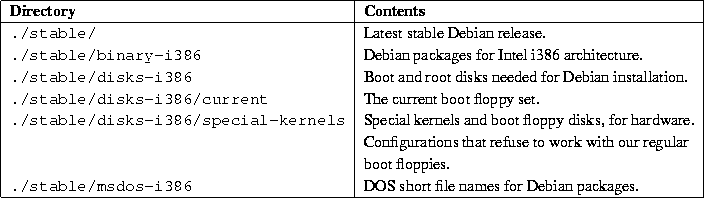
For a base installation of Debian you need about 12 megabytes of disk
space and some floppies. First, you need boot and driver floppy
images. Debian provides two sets of boot floppy images, for 1.2 and
1.44 Mb floppy disks, and one set of the base images which work with
either type of floppy. Check what floppy drive your system boots from,
and download the appropriate disk set.
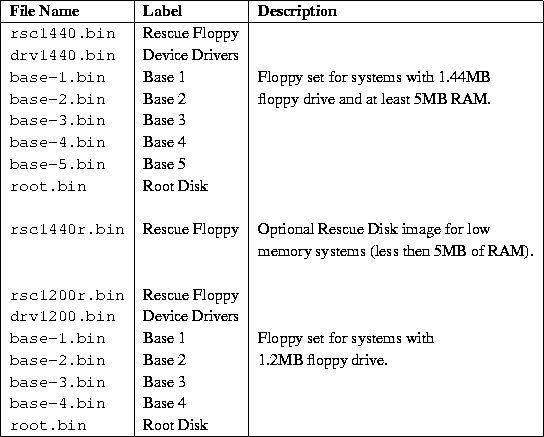
Choose the appropriate floppy set for your hardware from the table on
page
To install and use Debian, you need more than the base system. To
decide what packages you want, download the file Packages
from:
This file is a current list of Debian packages available in the stable
Debian distribution. The file comes in a special format; every package
has its own entry separated by a blank line. Each package's
information is broken up into fields. The table on
page
Place the Rescue floppy in the boot drive and reboot. In a minute or
two, you should see a screen introduce the Rescue floppy and the
boot prompt.
It's called the Rescue floppy because you can use
it to boot your system and perform repairs if there is a problem that
makes your hard disk unbootable. Save this floppy after you install
the system.
You can do two things at the boot: prompt: press the function
keys F1 through F10 to view a few pages of helpful
information, or boot the system. If you have any hardware devices that
Linux doesn't access correctly at boot time, you may find a parameter
to add to the boot command line in the screens you see by pressing
F3, F4, and F5.
If you add parameters to the boot command line, be sure
to type the word ``linux'' and a space before the first
parameter. If you simply press Enter, that's the same as typing
``linux'' without any special parameters.
If this is the first time you're booting the system, press
Enter and see if it works correctly. It probably will. If not, you
can reboot later and look for any special parameters that inform the
system about your hardware.
Once you press Enter, you should see the messages
If your system has 4MB of RAM, you may see a paragraph about low
memory and a text menu with three choices. If your system has enough
RAM, you won't see this at all, and you'll go directly to the color or
monochrome dialog box. If you get the low-memory menu, you should go
through its selections in order. Partition your disk, activate the
swap partition, and start the graphical installation system. The
program that is used to partition your disk is called cfdisk,
and you should see the manual page for cfdisk and the
instructions on page
cfdisk is used to create a Linux Swap partition (type 82) on the
hard drive. You need the swap partition for virtual memory during
installation, because the procedure likely uses more memory than you
have physical RAM for. Select the amount of virtual memory that you
intend to use once your system is installed. It is exactly equal to
the amount of disk space required. Sixteen megabytes is probably the
smallest practical amount, but use 32 megabytes if you can spare the
disk space, and 64 megabytes if the disk is large enough and you won't
miss the space.
Once the system finishes booting, you should see the color or
monochrome dialog box. If your monitor displays black and white
(monochrome), press Enter and continue with the installation.
Otherwise, use the arrow key to move the cursor to the Color
menu item and then press Enter. The display should change from
black and white to color. Press Enter again to continue with the
installation.
You may see a dialog box that says,
During the entire process, you are presented with the main menu. The
choices at the top of the menu change to indicate your progress in
installing the system. Phil Hughes wrote in Linux Journal that
you could teach a chicken to install Debian. He meant that the
installation process was mostly just pecking at the Enter
key. The first choice on the installation menu is the next action you
should perform according to what the system detects you have already
done. It should say Next, and, at this point, the next item
should be
Make sure that the highlight is on the Next item, and press
Enter for the keyboard configuration menu. Select a keyboard
that conforms to the layout used for your national language, or select
something close to it if the keyboard layout you want isn't
shown. After installation you can select a keyboard layout from a
wider range of choices. Move the highlight to the keyboard selection
and press Enter. Use the arrow keys to move the highlight--they
are in the same place on all national language keyboard layouts and
are independent of the keyboard configuration.
If you are an experienced UNIX or Linux user, press LeftAlt and
F2 in unison for the second virtual console. That's the
Alt key on the left-hand side of the Space bar and the
F2 function key. You'll see a separate window running a Bourne
shell clone called ash. At this point, the root file system is
on the RAM disk, and there is a limited set of UNIX utilities available
for your use. You can see what programs are available with the command
The shell and commands are there only in case something goes wrong. In
particular, you should always use the menus, not the shell, to
activate your swap partition, because the menu software can't detect
whether you've done this from the shell. Press
LeftAlt-F1 to get back to menus. Linux provides up to 64
virtual consoles, but the Rescue floppy only uses a few of them.
Last chance!
Have you backed up your disks? Here's your first chance to wipe out
all of the data on your disks, and your last chance to save your old
system. If you haven't backed up all of your disks, remove the floppy
from the drive, reset the system, and create a backup.
If you have not already partitioned your disks for Linux Native and
Linux Swap file systems, the menu item Next will be
The Partition a Hard Disk menu item presents you with a list of
disk drives you can partition and runs the cfdisk program (see
page
Your swap partition will be used to provide virtual memory for the
system and should be between 16 and 128 megabytes in size, depending
on how much disk space you have and how many large programs you want
to run. Linux will not use more than 128 megabytes of swap, so there's
no reason to make your swap partition larger than that. A swap
partition is strongly recommended, but you can do without one if you
insist and system has more than 16 Mb of RAM.
This is the Next menu item after you create one disk
partition. You have the choice of initializing and activating a new
swap partition, activating a previously initialized partition, and
doing without a swap partition. It's always permissible to
re-initialize a swap partition, so select Initialize and Activate
the Swap Disk Partition unless you are sure that you know what you
are doing. This menu choice will give you the option to scan the
entire partition for unreadable disk blocks caused by defects on the
surface of the hard disk platters. This is useful if you have MFM,
RLL, or older IDE disks, and checking the disk never hurts. Properly
working SCSI disks don't need to be scanned. They have their own
internal mechanism for mapping out bad disk blocks.
The swap partition provides virtual memory to supplement the RAM in
your system, and it's even used while the system is being
installed. That's why we initialize it first.
At this point, the Next menu item should be
You can initialize a Linux disk partition, or alternately you can
mount a previously initialized partition.
The boot floppies will not upgrade an old system without removing the
files--Debian provides a different procedure than using the boot
floppies for upgrading existing Debian systems. Thus, if you are using
old disk partitions that are not empty, you should initialize them,
which erases all of the files. You must initialize any partition that
you created in the disk partitioning step. About the only reason to
mount a partition without initializing it at this point would be to
mount a partition upon which you have user files, like /home,
that you don't want deleted.
Select the Next menu item, to initialize and mount the root (the
``/'' directory) disk partition. The first partition you mount
or initialize, after the swap partition, if you're using it, is the
partition mounted as root. You will be offered the choice to scan the
disk partition for bad blocks, as when you initialized the swap
partition. It never hurts to scan for bad blocks. Keep in mind that
this step can take 10 minutes or more if you have a large disk.
Once you've mounted the root partition, the Next menu item will
be
There will be a pause while the system looks for a local copy of the
base system. This search is for CD-ROM installations and will not
succeed. You are then offered a menu of drives from which to read the
base floppies. Select the appropriate drive. Feed in the Base 1, Base
2, Base 3, and Base 4 floppies--and Base 5 if you are using 1.2MB
floppies--as requested by the program. If one of the base floppies is
unreadable, you need to create a replacement floppy and feed all five
floppies into the system again. After the floppies have been read, the
system installs the files. This can take ten minutes or more on a slow
system.
At this point, the Next menu item should be
Select the menu item to install the device drivers. You will be
prompted to insert the Device Drivers floppy, and the drivers will be
copied onto your hard disk. Select the
There is a menu selection for PCMCIA device drivers, but you do not
need to use it. After installation you can install the pcmcia-cs
package. This detects PCMCIA cards automatically and configures those
it finds. It also recognizes cards that are hot swapped when the
system is running--they will all be configured as they are plugged
in, and de-configured when unplugged.
At this point the system read in all of the files that make up a
minimal Debian system, but you must perform some configuration before
the system will run. Select
Next, you are asked if your system clock should be set to Greenwich
Mean Time (GMT) or local time. Select GMT if are running only Linux or
another UNIX on your system. Select local time if you use another
operating system like MS-DOS or Microsoft Windows. UNIX systems keep
GMT time on the system clock and use software which converts it to the
local time. This allows them to keep track of daylight savings time
and leap years, and even allows users who are logged in from other
time zones to individually set the time zone on their terminal. If
you run the system clock on GMT and your locality uses daylight
savings time, the system adjusts for daylight savings time properly on
the days it starts and ends.
You must configure the network even if you don't have one, but you
only have to answer the first two questions:
The program will guess that the network IP address is the bitwise AND
of your system's IP address and netmask. It will guess that the
broadcast address is the bitwise OR of your system's IP address with
the bitwise negation of the netmask. It will guess that your gateway
system is also your DNS server. If you can't find any of these
answers, use the system's guesses--if necessary, you can alter them
after installation by editing the /etc/init.d/network file.
If you choose to make the hard disk boot directly to Linux, you are
asked to install a master boot record. If you aren't using a boot
manager (this is probably the case if you don't know what a boot
manager is), answer ``yes'' to this question. The next question is
whether you want to boot Linux automatically from the hard disk when
you turn on the system. This sets Linux to be the bootable
partition--the one that will be loaded from the hard disk. If you
answer ``no'' to this question, you can set the bootable partition
later using the MS-DOS FDISK.EXE program, or the Linux
fdisk or activate programs.
You should make a boot floppy even if you intend to boot the system
from the hard disk. The reason for this is that it's possible for the
hard disk bootstrap to be installed incorrectly. A boot floppy will
almost always work. Select
This is what electrical engineers call the ``smoke test''--what
happens when you power up a new system for the first time. Remove the
floppy disk from the floppy drive and select
After you've added logins, (Chapter 4 discusses
this in some detail), you are dropped into dselect, the Debian
package management program.
You should read the tutorial before attempting to
install packages with dselect.
dselect allows you to select the packages that you want
installed on your system. The Debian package management software is
described in detail starting on page
You must be the superuser (root) to use dselect.
If you install the X Window System and do not use a US
keyboard, read the X11 Release note for non-US keyboards.
After you exit dselect, you are at the login: prompt. Log
in using the personal login and password you selected. Your system is
ready to use.
This section describes the Debian packaging system and Debian-specific
utilities. The Debian/GNU Linux Packages file format is shown
in the table on page
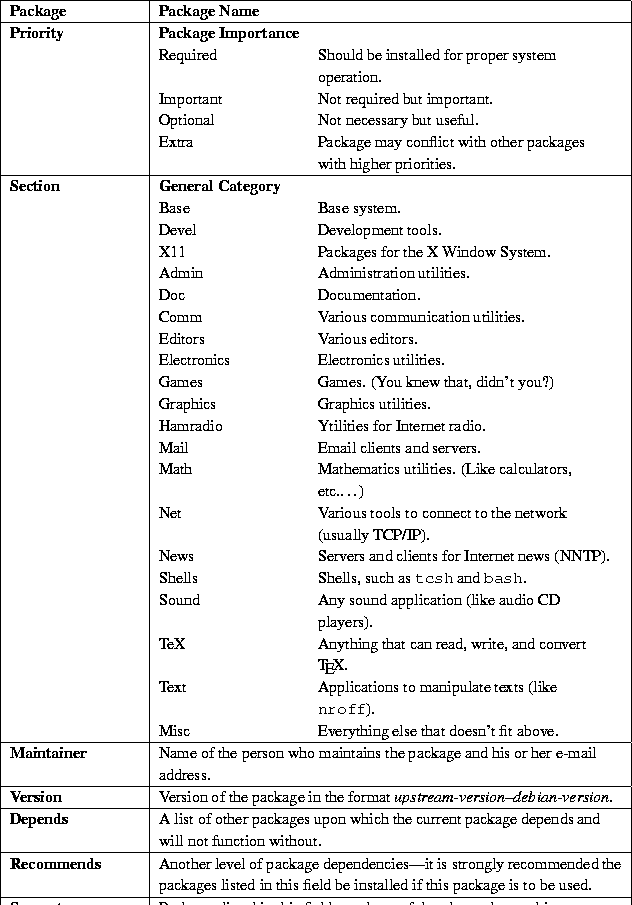
Debian distributions come in archives called packages. Every
package is a collection of files (programs, usually) that can be
installed using dpkg or dselect. In addition, the
package contains some information about itself that is read by the
installation utilities.
The packages that are included with Debian GNU/Linux are classified
according to how essential they are (priority) and their functionality
(section).
The priority of a package indicates how essential or necessary it
is. Debian GNU/Linux classifies all packages into four different
priority levels:
These packages must be installed for the system to operate correctly
and have been installed as part of the base system.
Never remove a required package from the system unless
you are absolutely sure of what you are doing. This bears repeating:
Never, never, never remove a required package from the system
unless you are absolutely sure of what you are doing. It is likely
that doing so will render your system completely unusable.
Required packages are abbreviated in dselect as Req.
Important packages are found on almost all UNIX-like operating
systems. These packages include cron, man, and vi.
Important packages are abbreviated in dselect as Imp.
Standard packages are packages that, more or less, comprise the
``standard,'' character based, Debian GNU/Linux system. The Standard
system includes a fairly complete software development environment and
GNU Emacs.
Standard packages are abbreviated in dselect as Std.
Optional packages comprise a fairly complete system. The Optional
system includes TeX and the X Window System.
Optional packages are abbreviated in dselect as Opt.
Extra packages are only useful to a small or select group of people,
or are installed for a specific purpose. Extra packages might include
such programs as electronics and ham radio applications.
Extra packages are abbreviated in dselect as Xtr.
By default, dselect automatically selects the Standard system
if the user doesn't want to individually select the packages to be
installed.
The section of a package indicates its functionality or use.
Packages on the CD-ROM and in FTP archives are arranged in
subdirectories according to function. The directory names are fairly
self-explanatory: for example, the directory admin contains
packages for system administration and the directory devel
contains packages for software development and programming. Unlike
priority levels, there are many sections, and more may be added in the
future, so we do not individually describe them in this guide.
Each package includes information about how it relates to the other
packages included with the system. There are four package
relationships in Debian GNU/Linux: conflicts, dependencies,
recommendations, and suggestions.
A conflict occurs when two or more packages cannot be installed
on the same system at the same time. A good example of conflicting
packages are mail transfer agents (MTAs). A MTA is a program that
delivers electronic mail to users on the system and other machines on
the network. Debian GNU/Linux has two mail transfer agents:
sendmail and smail.
Only one mail transfer agent may be installed at a time. They both do
the same job and are not designed to coexist. Therefore, the
sendmail and smail packages conflict. If you try to install
sendmail when smail is already installed, the Debian
GNU/Linux package maintenance system will refuse to install it.
Likewise, if you try to install smail when sendmail is
already installed, dselect (or dpkg; see below) will
refuse to install it.
A dependency occurs when one package requires another package to
function properly. Using our electronic mail example, users read mail
with programs called mail user agents (MUAs). Popular MUAs include
elm, pine, and emacs RMAIL mode. It is normal to
install several MUAs at once because they do not conflict. But MUAs
do not deliver mail--that is the job of the MTA. So all mail user
agent packages depend on a mail transfer agent.
A package can also recommend or suggest other related packages.
This section is a brief tutorial on Debian dselect. For more
detailed information, refer to the dselect manual at
dselect is simple, menu-driven interface which helps install
packages. It takes you through the package installation process in the
order of the on-screen menu:
There are two ways to select an option from the menu: choose it with
arrows, or press the key of the corresponding letter in brackets.
In this menu you choose the method to obtain and install the packages.
dselect reads the Packages database (described above) and
creates a database of the packages available on your system.
This section of the program selects the packages. Choose your the
package you want and press Enter. If you have a slow machine,
the screen may clear and remain blank for 15 seconds. The first thing
that appears is Page 1 of the Help file. You can view this screen by
pressing "?" at any point in the Select screens, and you can page
through the help screens by pressing the . (period) key.
To exit the Select screen after all of the selections are complete,
press Enter. This returns you to the main screen if
there are no problems with your selection. You must resolve those
problems first. When you are satisfied with any given screen, press
Enter.
Dependency conflicts are quite normal and to be expected. If you
select package A and that package requires the unselected package B in
order to run, dselect warns you of the problem and will most
likely suggest a solution. If package A conflicts with package B, you
must decide between them.
dselect runs through the entire 800 packages and installs the
ones that are selected. You will need to make decisions during this
process. It is often useful to switch to a different shell to
compare, for example, an old configuration file with a new one. If
the old file is called conf.modules, for example the new file
will be called conf.modules.dpkg-new.
The screen scrolls by fairly quickly on faster machines. You can halt
the display is by pressing Control-S and restart it with
Control-Q. At the end of the run, there will be a list of
any uninstalled packages.
Most packages are configured in Step 3, but anything remaining can be
configured here.
Remove packages that are no longer needed.
Au revoir.
This is a command line tool that installs and manipulates Debian
packages. It has several options that allow you to install, configure,
update, remove, and perform other operations on Debian packages. You
can even build your own packages. dpkg also allows you to list
the available packages, files "owned" by packages, which package
owns a file, and so on.
Type the following command:
You may also unpack a package without configuring it by entering:
If a package depends on an uninstalled package or a newer version of a
package you already have, or if any other dependency problem occurs
during the installation, dpkg will exit without configuring it.
If dpkg aborts during installation and leaves a package
installed, the package is left unconfigured. The Debian packaging
system requires the package to be configured to avoid dependency
problems. Some packages also require configuration to work properly.
To configure a package, type:
In the Debian package system, there are two ways to eliminate packages:
remove and purge. The remove option removes the
specified package; the purge option removes both the specified package
and its configuration files. The usage is:
To report the status of the package (e.g., installed, not installed, or
unconfigured), enter:
To list the installed packages that match some pattern, type:
To list all the files owned by a particular package, simply type:
To find the package which owns a particular file, type the following
command:
dpkg is simple to use and is preferred over dselect when
all that you need to do is install, upgrade, or remove a small number of
packages. It also has some functionality that dselect (an
interface to dpkg) doesn't have, like finding which package
owns a file. For the full list of options, refer to the dpkg(8)
manual page.
The Debian GNU/Linux Project was created by Ian Murdock in 1993,
initially under the sponsorship of the Free Software Foundation's GNU
project. Later, Debian separated from FSF. Debian is the result of a
volunteer effort to create a free, high-quality UNIX-compatible
operating system based on the Linux kernel, complete with a suite of
applications.
The Debian community is a group of more than 150 unpaid volunteers
from all over the world who collaborate via the Internet. The founders of
the project have formed the organization Software in the Public
Interest (SPI) to sponsor Debian GNU/Linux development.
Software in the Public Interest is a non-profit organization
formed when the FSF withdrew their sponsorship of Debian. The purpose
of the organization is to develop and distribute free software. Its
goals are very much like those of FSF, and it encourages programmers
to use the GNU General Public License on their programs. However, SPI
has a slightly different focus in that it is building and distributing
a Linux system that diverges in many technical details from the GNU
system planned by FSF. SPI still communicates with FSF and cooperates
in sending them changes to GNU software and in asking its users to
donate to FSF and the GNU project.
SPI can be reached by post at:
There are several Debian-related mailing lists:
There are also several mailing lists for Debian developers.
You can subscribe to those mailing list by mail or the World Wide
Web. For more information, please visit http://www.debian.org/.
The Debian project has a bug tracking system that handles bug reports
by users. As soon as the bug is reported, it is given a number and all
of the information provided on the particular bug is stored in a file
and mailed to the maintainer of the package. When the bug is fixed,
it must be marked as done (``closed'') by the maintainer. If it was
closed by mistake, it may be reopened.
To receive more information on the bug tracing system, send e-mail to
request@bugs.debian.org with help in the body of the
message.
Many thanks to Bruce Perens and the other authors of Debian related
materials that were used to write this chapter. Thanks also to Vadik
Vygonets, my beloved cousin, who helped me quite a bit. Lastly,
thanks are also due to the members of Debian community for their hard
work. Let's hope that Debian GNU/Linux becomes even better.
Debian GNU/Linux changes very quickly, and many facts can change more
quickly than this book. The source text of this section is updated
regularly. You can find it at
red-hat-installation
This section on Red Hat Linux was written by Henry Pierce.
Red Hat Linux's RPM package management system manages software by
defining how a software package is built for installation and collects
information about its components and installation methods during the
build process. A RPM package has an organized packet of data in the
header of package.rpm which can be added to a database
that describes where the package belongs, what supporting packages are
required, whether the required packages are installed, and provides a
means to determine software dependencies.
RPM gives system administrators the ability to: upgrade individual
components or entire systems while preserving the configuration of
the system or package; query the database for the location of files,
packages, or related information; perform package verification so
packages can be installed properly, or at all; keep source packages
``pristine'' (provide the package author's original source and
second-party patches separately) so that porting issues can be
tracked. Because RPM does this, you can install, upgrade, or remove
packages with a single command line in text mode or a few clicks of
the mouse in X Package Management Tool. Examples of using RPM from the
command line are:
A properly built package.rpm has the following
characteristics: its name identifies the package, the version, the
build revision, the architecture, and the extension .rpm, which
identifies it as a RPM package.
Take, for example, bash-1.14.7-1.i386.rpm. The name itself
contains useful information: the package is bash (the Bourne
Again SHell), it is version 1.14.7, and it is build 1 of the current
version for Red Hat Linux. It was built for Intel or compatible 80386
or higher CPUs, and it is in RPM format. So, if you see a package
named bash-1.14.7-2.i386.rpm, you know that it is the second
build of bash version 1.14.7, and probably contains fixes for
problems of the previous build and is more current. While the internal
organization of a *.rpm file is beyond the scope of this
section, a properly built package contains an executable file, any
configuration files, the documentation (at least manual pages), any
miscellaneous files directly related to the package, a record of where
the packages files are to be installed, and a record of any required
packages. After successful installation, information about the package
is registered in the system's RPM database. A more thorough discussion
of RPM package management system may be found in the RPM HOWTO (see
Appendix A). It is also available at
Only upgrades from version 2.0 of Red Hat Linux and onward are
supported due to major changes in Linux's binary format. Otherwise,
upgrades can be performed from the same installation methods of
CD-ROM, NFS, FTP, and hard disk. As of Red Hat Linux version 4.0, the
upgrade option is incorporated into the Boot diskette instead of a
separate program. If you upgrade from v2.1 to v3.0.3 and want to
upgrade again to version 4.0, you need to create the Boot diskette
instead of looking for an upgrade script, the same as Red Hat
4.x installation from scratch. This method does not reformat
your partitions nor delete your configuration files.
To create an Installation Floppy Kit, you need the following:
After you create the Installation floppies using RAWRITE.EXE or
dd as described on page
For NFS installation, you will either need a Red Hat CD-ROM on a
machine (such as an existing Linux box) that can support and export an
ISO-9660 file system with Rockridge Extensions, or you need to mirror
one of the Red Hat distributions with the directory tree organized as
described above--and of course, the proper files in each
directory. The directory /RedHat needs to be exported to the
machines on the network that are to have Red Hat Linux installed or
upgraded. This machine must be on an Ethernet; you can not do an NFS
install via dialup link.
Hard drive installations must have the /RedHat directory created
relative to the root directory of the partition (it doesn't matter
which partition) that will contain the Red Hat distribution obtained
either from CD-ROM or an FTP site. For example, on the primary DOS
partition, the path to
To install via FTP over the Internet, all you need is the IP address
of the FTP server and the root directory path for the Red Hat Linux
system you wish to install. See Appendix B for a list of
Linux FTP sites and mirrors. If you intend to do an FTP installation
over a low-bandwidth connection (anything slower than a 128K ISDN
link), it is highly recommended you copy the files to an existing
MS-DOS hard drive partition and then install from the hard drive. The
total size of the packages in the /RedHat/RPMS directory is
approximately 170MB and will take many hours to install. If something
goes wrong with the installation, such as the link going down, you
need to start from the beginning. If you get the files first and set
up your hard drive to install Linux, it is then less work and less
confusing to recover from a failed installation. You don't even need
to download all of the files in /RedHat/RPMS to successfully
install a minimal system which can grow with your needs. See the next
section for details.
You can
customize the installation process. This is not for the faint
of heart--only those already familiar with Linux should attempt it.
As of Red Hat Linux version 4.x, the
/RedHat/RPMS directory contains approximately 170MB of .rpm
files. RPM compresses these packages and assumes that the packages
need an average of 2 to 3MB of hard drive space for every 1MB of RPM
package volume. If package.rpm is 6MB in size, you
need between 12 and 18MB of free space to install the package.
Customizing which packages are available for installation is an option
when installing the system via FTP, NFS, and hard drive. CD-ROMs
(typically) cannot be written to, but you can copy the files to the
hard drive and install from there with the customized package
list. FTP and NFS installations can only be designed if you have root
access to the server(s) on your network or your system administrator
is willing to work with you. The following installation situations
make custom installation desirable: when obtaining Red Hat Linux via
FTP over a low-bandwidth connection or when designing a suite of
software to be used by all Red Hat Linux workstations on a network.
To customize the installation, you must obtain the
/base/comps file which provides you with the list of packages
that a full installation would normally include. Then, the packages
you actually want to install from /base/comps need to be
downloaded. The /base/comps file must be edited to reflect
the packages that you obtained and are going to install.
If you have local RPM packages, you can add them to the
comps file as well.
The Red Hat installation program uses the file
/RedHat/base/comps (the file here is an example from Red Hat
Linux version 4.0) to determine what packages are available in the
/RedHat/RPMS directory for each category to be installed. The
file is organized by category, and each category contains a list of
packages Red Hat believes are the minimum required for that
section. NOTE: only the package part of a package's name
(package-version-build.rpm) is listed in the file. This means
the comps file is generally usable from one version of Red Hat
to the next. A section in this file has the structure:
That is a tag to identify the category number, the category, a list of the
package names in the category, and the tag ``end'' to mark the end of
the category.
Without exception, everyone needs all of the software packages listed
in the Base section of the file. The other sections, though, can
generally be customized or eliminated to suit a particular need. For
example, there are three types of Networked Stations: ``plain'',
management, and dial-up. An examination of these sections shows that
many of the software packages are listed in all three categories, but
some software packages are specific to the category. If you are
creating a Dial-up Networked Station, then you can safely
eliminate the ``Plain'' and ``Management'' sections and any software
unique to those categories. Conversely, if you only need basic
networking capability for networked work stations, the other sections
can be eliminated from the file as well as the software unique to
those sections. All you need to do is make sure that you have all of
the software packages listed in that category. If you have local
custom packages (those not provided by Red Hat Software), you should
add them to an existing category that is appropriate rather than
creating a new category.
Because the list of packages in each category only contains the name
of the package (i.e., not the entire
package-name-version-build.rpm), you can
substitute any updates Red Hat has made available in the updates
directory on:
The ``-q'' puts rpm in query mode, the ``-p'' tells
rpm to query an uninstalled package, and the ``-R'' tells
rpm to list the target package's dependencies. In this example,
we see libc.so.5 and libtermcap.so.2 are required. Since
libc and termcap are part of the base of required software
(as is bash), you must insure that the libc and
libtermcap packages (the dependency packages) are present to be able
to install bash (the target). As long as you get the entire base
system installed, you can boot the system when the installation
program completes. You can add additional packages to Red Hat Linux as
required even if the installation program reports that a package
failed to install because its dependencies were not met.
The table on page
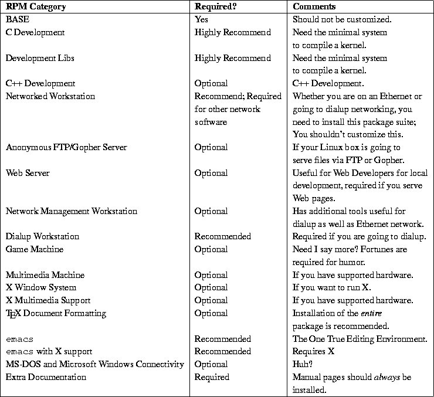
It is difficult to determine how much space an installation will
require. However, someone installing via FTP should get the
Base system and the Dialup Networked Station and install
these. Then, additional software can be obtained and added as the need
arises. Of course, if you want to do C programming, you should get the
relevant packages and edit the comps file appropriately.
If you encounter a package during the installation which
requires another package that you don't have available, or you make a
mistake in the comps file, you can generally finish the
installation and have a bootable, working system. You can correct the
problem by manually adding the failed packages and their dependencies
later. Overall, get the entire Base system and one of the
Networked Station packages installed, and you can add anything you
need or want later.
The table on page
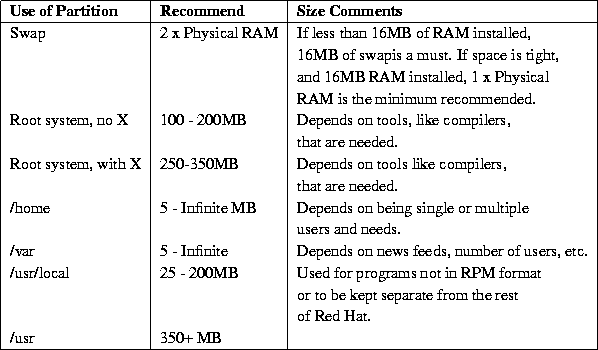
By now, you should have created the Installation Floppy Kit, prepared
your hard drive, and have your installation media ready. The details
of the installation follow. You first begin by booting your system
and configuring the installation program to install from your selected
medium. After this the installation proceeds with the same steps for
everyone. You need to begin by booting your computer with the diskette
labeled ``Boot diskette.''
As the boot diskette starts up, the kernel attempts to detect any
hardware for which the boot kernel has drivers compiled directly into
it. Once booting is complete, a message appears which asks if you have
a color screen (if you do, select ``OK''). Next comes the Red
Hat Welcome screen. Choose ``OK'' to continue. The next question
asks if you need PCMCIA support. You must answer ``yes'' if you
are installing to a laptop, inserting the Supplemental diskette when
prompted. Once PCMCIA support is enabled if necessary, you are
presented with a screen that asks what type of installation method to
use. Follow the instructions in the following sections for the method
you chose.
To install from CD-ROM, highlight ``Local CD-ROM'' from the list
of installation types. Then click ``OK''. You will be asked if
you have a SCSI, IDE/ATAPI, or proprietary CD-ROM. This is where some
of the hardware research pays off: if you have 4X or faster CD-ROM
drive that was made recently and bundled with a Sound Blaster or other
sound card, you most likely have an IDE/ATAPI type drive. This is one
of the most confusing issues facing you.
If you choose SCSI, you must know what kind of SCSI card you have and
will be presented a list. Scroll down the list until you find your
SCSI card. After you select it, you will be asked if you wish to
AUTOPROBE for it or SPECIFY OPTIONS. Most people should choose
AUTOPROBE, which causes the program to scan for your SCSI card
and enable the SCSI support for your card when found.
After the Installation Program has successfully located the Red Hat
CD-ROM, you should read the next section.
To install from a hard drive, highlight this option and choose ``
OK''. If you have not already chosen PCMCIA support, you will be
prompted to insert the Supplemental diskette.
To install via NFS, highlight this option and choose ``OK''. You
must choose the Ethernet card installed on the target machine so the
Installation Program can load the correct driver. Highlight the
appropriate card from the list, and then select ``OK'', allowing
the Installation Program to AUTOPROBE for your card.
If your machine locks up, you must press
Ctrl-Alt-Delete to reboot the system. Most of the
time, when this happens, it is because the probing interferes with a
non-Ethernet card. If this happens, try again and choose SPECIFY
OPTIONS, and give the data about your card in this form:
The last screen prompts you for the NFS server and the exported
directory containing the Red Hat distribution. For example, if your NFS
server is redhat.infomagic.com, enter:
If you do not know these values, ask your system administrator. After
you enter the values, select OK to continue. If the installation
program reports an error locating the Red Hat distribution, make sure
that you have the correct values filled in above and that your network
administrator has given you export permission for the target machine.
FTP installation is similar to the NFS installation described
above. You are prompted for the Ethernet card and your machine's
TCP/IP information. However, you will be asked for the FTP site
name and Red Hat directory on the Red Hat mirror site, instead
of NFS server information. One warning about performing an
FTP installation: find the closest and least busy FTP site to your
location. See Appendix B for a list of Linux FTP sites.
If your hardware isn't detected, you may need to provide an
override for the hardware to be enabled properly. You may also want
to check:
to see if Red Hat has updated boot diskettes for your hardware.
If you have not installed a root partition that begins and ends
between cylinder 0-1023, Do not install LILO. When you
reboot the system for the first time, if LILO does not allow you to boot
your system correctly, use the Emergency MS-DOS and Windows 95 boot
diskette and, at A:
Where xxxx is the root partition.
After the installation procedure is complet, you are ready to reboot your
system and use Linux.
Now that you have installed Linux and booted your system for the
first time, there are some useful things to know about using your
system
When you power up or reboot the system, you may see the LILO prompt,
which you hopefully configured for a 30-second or so delay before it
boots the system. When LILO appears on the screen, if you do nothing,
the default operating system will boot at the prescribed timeout
period. However, from LILO, you can control several aspects of how
Linux boots, or tell LILO to boot an alternative operating system. If
you wish to override the default behavior of LILO, pressing the
Shift key at the appearance of LILO will cause a ``boot:''
prompt to appear. Pressing Tab at this prompt will produce a
list of available operating systems:
This tells us that ``dos'' is the default operating system,
which will boot if nothing is typed; to boot Linux, type ``
linux''. However, LILO lets you pass parameters to the Linux kernel
which override the default behavior. For example, you may have been
experimenting with start-up configuration files and did something to
prevent the system from coming up properly. If so, you want to boot
the system up to the point where it reads the configuration files and
no further . The override for this is ``single'':
Now that you are faced with the login: prompt for the first
time, you may be wondering how to get into the system. At this point
on a newly installed system, there is only one account to log in
to--the administrative account, ``root''. This account is used
to manage your system and do things like configure the system, add and
remove users, software, and so on. To login into the account, enter
``root'' at the login: prompt and press
Enter. You are aked for the password you entered
during installation. Enter that password at the password:
prompt. The system prompt [root@locahost] # appears after
you have successfully negotiated the login. The system prompt tells
you two things: you are logged in as root, and in this case,
your machine is called localhost. If you named your machine
during the installation process, your host name will appear instead of
localhost.
caldera-installation
This section on Caldera OpenLinux was written by Evan Leibovitch.
This section
is intended to be a complement to the Getting Started Guides that
Caldera ships with all of its Linux-based products. References to the
Getting Started Guide for Caldera Open Linux Base is indicated
throughout this section as ``the Guide''.
Unlike most other Linux distributions, Caldera OpenLinux is not
available for downloading from the Internet, nor can it be distributed
freely, nor passed around. This is because of the commercial packages
which are part of COL; while most of the components of COL are under
the GNU Public License, the commercial components, such as Looking
Glass and Metro-X, are not. In the list of packages included on the
COL media starting on page 196 of the Guide, the commercial packages
are noted by an asterisk.
COL is available directly from Caldera, or through a network of
Partners around the world who have committed to supporting Caldera
products. These Partners can usually provide professional assistance,
configuration and training for Caldera users. For a current list of
Partners, check the Caldera web site.
Caldera supports the same hardware as any other release based on Linux
2.0 kernels. Appendix A of the Guide lists mosts of the SCSI
hosts supported and configuration parameters necessary for many
hardware combinations.
Caldera's Guide provides
an installation worksheet that assists you in having at hand
all the details of your system that you'll need for installation. It
is highly recommended you complete this before starting installation;
while some parameters, such as setting up your network, are not
required for installation, doing it all at one time is usually far
easier than having to come back to it. Sometimes this can't be
avoided, but do as much at installation time as possible.
The COL distribution does not come with the floppy disks required for
installation. There are two floppies involved; one is used for
booting, and the other is a ``modules'' disk which contains many hardware
drivers.
While the Guide recommends that you create the floppies by copying
them from the CD-ROM, it is better to get newer versions of the disks
from the Caldera web site. The floppy images on older CD-ROMs have
errors that cause problems, especially with installations using SCSI
disks and large partitions.
To get newer versions of the floppy images, download them from
Caldera's FTP site. In directory pub/col-1.0/updates/Helsinki, you'll
find a bunch of numbered directories. Check out the directories in
descending order--that will make sure you get the latest versions.
If you find one of these directories has a subdirectory called
bootdisk, the contents of that directory
are what you want.
You should find two files:
After you have these images, transfer them onto two floppies as
described for generic installations on page
Caldera's CD-ROM is bootable if your system's BIOS allows it, but
use the downloaded floppies if possible. They are newer and will
contain bug-fixes that won't be in the CD versions.
This procedure is no different than other Linux distributions. You
must use fdisk on your booted hard disk to allocate at least two
Linux partitions, one for the swap area and one for the root file
system. If you are planning to make your system dual-boot COL with
another operating system, like Microsoft Windows, MS-DOS, or
OS/2, it's usually preferable to install COL last. The Linux
fdisk programs recognizes ``foreign'' OS types better than the disk
partitioning tools of most other operating systems.
To run the Linux fdisk, you must start your system with the boot
(and maybe the modules) floppy described above. You must tell COL what
kind of disk and disk controller you have. You can't even get as far
as entering fdisk if Linux doesn't recognize your hard disk!
To do this, follow the bootup instructions in the Guide, from step 2
on pages 33-36. Don't bother going through the installation or
detection of CDROMs or network cards at this time; all that matters at
this point is that Linux ``sees'' the boot hard disk so you can
partition it with fdisk. A brief description of the use of the
Linux fdisk is provided on page 28 of the Guide.
Remember that when running fdisk, you need to set up both your
root file system as Linux Native (type 83) and your Swap space (type
82) as new partitions. A brief discussion of how much swap space to
allocate is offered on page 10 of the Guide.
As soon as you have allocated the partitions and written the partition
table information to make it permanent, you must reboot.
This section on Linux Slackware was written by Sean Dreilinger.
Welcome to the Slackware distribution of Linux! This section aims
to help the new Linux user or administrator evaluate Slackware,
plan a Slackware system, and install Slackware Linux.
Whether or not to choose Slackware as the flavor of Linux you
will use is a serious consideration. It may seem like a trivial
decision now, but Linux boxes have a way of taking on more and
more responsibility in organizational computing environments.
Plenty of Linux experiments have evolved in their first
year to become mission-critical machines serving many more users
and purposes than originally intended. Slackware is one of the
most widely used distributions of Linux. When it comes to finding
the newest, easiest, or most carefully planned distribution of
Linux, Slackware may be ``none of the above''. Some background on
the life and times of Slackware put things into perspective.
In 1993, Soft Landing System created one of the first organized
distributions of Linux. Although it was a great start, the SLS
distribution had many shortcomings (it didn't exactly work, for
starters). Slackware, a godsend from Patrick Volkerding, solved most
of these issues, was mirrored via FTP and pressed onto CD-ROMs
worldwide, and quickly became the most widely used flavor of
Linux. For a while, Slackware was the only full featured Linux
``solution.'' Other Linux distribution maintainers, both commercial
and nonprofit, have gradually developed distributions that are also
well worth your consideration.
By January 1994, Slackware had achieved such widespread use that
it earned a popular notoriety normally reserved for rock stars
and cult leaders. Gossip spread through the Usenet suggesting
that the entire Slackware project was the work of witches and
devil-worshippers!
``Linux, the free OS....except for your SOUL! MOUHAHAHAHA!''
If you are a system administrator, you may already be dealing with one
or more key servers running Slackware. Unless you have time to
experiment at work, sticking to the tried-and-true distribution may be
the easiest way to go. If you expect to get help from UNIX literate
friends and colleagues, you had better make sure they're running
something compatible--odds are they're running Slackware. Its
shortcomings are widely acknowledged, for the most part discovered,
documented, and patched whenever possible. You can put together a
Slackware box, close the known security holes, and install some
complementary tools from the other Linux distributions to create an
excellent UNIX server or desktop workstation, all in about half a day.
Have a look also at the Buyer's Guide published in the Linux
Journal, which gives a thorough comparison and evaluation of each
major distribution. For a straightforward listing of Linux flavors,
have a look at the Linux Distribution HOWTO (see
Appendix A).
One thing we don't hear too often with Slackware is the U-word.
Slackware's setup program is designed to put a fresh operating system
onto empty hard disks or empty disk partitions. Installing on top of a
previous Slackware installation can erase your custom applications and
cause compatibility problems between updated applications and older
files on the same system. When Slackware was first put together,
everyone was a first-time Linux user, and the system was always
experimental--reinstalling the entire operating system and
applications was the norm in a developmental system. Today, many
institutions and businesses run mission-critical applications on
Slackware Linux. In such environment, a simple reboot is a planned
activity and taking down the system and overwriting all the user files
or custom applications is absolutely unacceptable.
Teaching you how to finagle a Slackware upgrade is beyond the scope of
this chapter, but it is workable if you are an experienced UNIX
administrator and you've taken precautions to preserve your local
modifications and user files. There is an Internet resource that
claims to analyze your distribution and bring it up to date across the
Internet. you might want to have a look at this URL if you're facing
an upgrade situation:
Or read, weep, and learn from the upgrade expertise of Greg Louis in
his mini HOWTO document: Upgrading Your Linux Distribution
available where finer LDP publications are mirrored:
Slackware can be installed from a variety of media and network
sources to fit your needs and budget. Every installation method
requires you to have at least three floppy diskettes available
to get started.
Installation from CD-ROM is fast, popular, and convenient. Although
someone has to break down and pay for the initial purchase of
a CD-ROM, sharing CD's is encouraged. Because Linux and
the Slackware distribution are copylefted, you may make as many
copies as you like. CD-ROM installation is also a bit better practice
in terms of netiquette, since you're not hogging bandwidth for
an all-day FTP transfer. Finally, you may be grateful for the
extra utilities and documentation that accompany the CD-ROM, especially
if you run into installation hassles or need to add components
in the future.
If you're a hobbyist (or want to watch a few dozen Slackware installs
before taking on the task at work), see if there is a LUG (Linux
User Group) in your area that sponsors install parties. Imagine
a roomful of generous and knowledgeable hackers uniting to share
CD-ROMs and expertise with other enthusiasts.
Once you transfer Slackware from the closest possible FTP mirror,
you'll still need to put the Slackware 'disk sets' onto installation
media such as a hard drive partition or laboriously copy them onto
50-odd floppy diskettes.
In a networked environment, it is possible to install Slackware
on a shared file system and allow everyone on the Local net to
attach to this shared location and install. If you have the technical
know-how or a geeked out system administrator who is Linux-literate,
this is a great way to go. The initial distribution of Slackware
can be added to the network via CD-ROM, FTP, Loading floppies,
tape, or even via a remote NFS share across the Internet! For
details on such a remote share, see these URLs:
It's time consuming, but it works--you can create the pile of
floppies needed to install Slackware and then feed them into your box
one-by-one when prompted. Slackware ``disk sets'' are actually
designed and arranged to fit floppy diskettes. If you happen to have a
huge stack of recycled, high-density floppy diskettes at your
disposal, this can be the most economical way to go.
This is the way to do it if you've transferred the Slackware distribution
across the Internet via FTP--you'll escape the floppy trap by merely
creating boot, root, and rescue diskettes. It requires you to
have an extra disk or disk partition with extra space to hold
the Slackware files during installation (you can erase them afterwards).
Installation from the hard drive is also a workaround if you bought
the CD but your CD-ROM drive is not supported by any of the Linux
kernels that come with the Slackware CD. You can use your present
operating system to transfer the Slackware files onto spare hard
disk space, then boot into the Slackware installation.
Still experimental as of this writing, tape offers a great compromise
of speed and economy when installing Slackware--worth considering if a
friend with compatible tape drive can dupe a CD or FTP archive for
you. Get the latest details from the Tape section of the
INSTALL.TXT file that accompanies your Slackware distribution.
Even if you're gifted with a direct T-3 Internet connection that
allows you to suck up a new distribution of Slackware right off
the 'Net, you'll be wise to start by building the two Slackware
setup disks (boot and root) before proceeding. In the event of
an unfortunate accident (power outage, feline friends traversing
the keyboard, or even human error), these two little disks
may be able to revive
your system or at least rescue your personal files.
After the files are all copied, Slackware can go on to do most of the
system and network configuration, if you're ready. To help you plan
your decisions, this section consists of a worksheet derived from the
text-based Slackware setup program. You can use this worksheet to
record answers in advance (while your computer is still working!), so
you'll be ready with the necessary details-partitions, IP addresses,
modem and mouse IRQs, host and domain names, and others that you're
required to provide during setup.
yes or no
yes or no
Do you want setup to use mkswap on your swap
partitions? Most likely ``yes'',
unless you have less than 4MB of RAM and have already done this
to help setup work better.
yes or no
partition name
Last chance to back out! When using the install from
scratch option,
you must install to a blank partition. If you have not
already formatted it manually, then you must format it
when prompted. Enter ``I'' to install from scratch, or
``a'' to add software to your existing system.
[i]nstall or [a]dd
(Re)format the main Linux partition. Would you like
to format this partition?
[y]es, [n]o, or [c]heck sectors, too
ext2fs defaults to one inode per 4096 bytes of drive
space. If you're going to have many small files on
your drive, you may need more inodes (one is used
for each file entry). You can change the density to
one inode per 2048 bytes, or even per 1024 bytes.
Enter 2048 or 1024, or just hit Enter to accept
the default of 4096.
4096 (default). 2048, or 1024
[y]es or [n]o
These are your Linux partitions (partition list displayed).
These partitions are already in use
(partition list displayed). Enter the
partition you would like to use, or type q to quit
adding new partitions. Use a format such as:
/dev/hda3 or whatever the device name is.
Partition name or [q]uit
Would you like to format this
partition?
[y]es, [n]o, or [c]heck sections, too
Now this new partition must be mounted somewhere in
your new directory tree. For example, if you want to
put it under /usr/X11R6, then respond: /usr/X11R6
Where would you like to mount this new partition?
Mount point
Would you like to mount some more additional
partitions?
[y]es or [n]o
[y]es or [n]o
Please enter the partition you would like to access
from Linux, or type q to quit adding new
partitions. Use a format such as: /dev/hda3 or
whatever the device name is.
Partition name or [q]uit
Now this new partition must be mounted somewhere in
your directory tree. Please enter the directory
under which you would like to put it. for instance,
you might want to reply /dosc, /dosd, or something
like that. Where would you like to mount this partition?
Mount point
1, 2, 3, 4, or 5
Partition name or [p]artition list
What directory on this partition can the Slackware
sources be found. In the example above, this would
be: /stuff/slack. What directory are the Slackware
sources in?
Directory name
What type of file system does your Slackware source
partition contain?
1, 2, 3, 4, or 5
Directory name
1, 2, 3, or 4
[y]es or [n]o
You will need to enter the IP address you wish to
assign to this machine. Example: 111.112.113.114.
What is your IP address?
IP address
Now we need to know your netmask. Typically this
will be 255.255.255.0. What is your netmask?
IP address
Do you have a gateway (y/n)?
[y]es or [n]o
What is your gateway address?
IP address
Good! We're all set on the local end, but now we
need to know where to find the software packages to
install. First, we need the IP address of the
machine where the Slackware sources are stored.
Since you're already running on the network, you
should be able to use the hostname instead of an IP
address if you wish. What is the IP address of your
NFS server?
IP address
There must be a directory on the server with the
Slackware sources for each disk in subdirectories
beneath it. setup needs to know the name of the
directory on your server that contains the disk
subdirectories. For example, if your A3 disk is
found at /slackware/a3, then you would respond:
/slackware. What is the Slackware source directory?
Directory name
1, 2, 3, 4, 5, 6, 7 8, 9, 10, 11, 12, or 13
IDE CD-ROM: Enter the device name that represents
your IDE CD-ROM drive. This will probably be one of
these (in the order of most to least likely):
/dev/hdb /dev/hdc /dev/hdd /dev/hde /dev/hdf
/dev/hdg /dev/hdh /dev/hda
Device name
SCSI CD-ROM: Which SCSI CD-ROM are you using?
If you're not sure, select /dev/scd0.
1. /dev/scd0
installation method: With the Slackware CD, you can
run most of the system from the CD if you're short
of drive space or if you just want to test Linux
without going through a complete installation. Which
type of installation do you want (slakware or
slaktest)?
slakware or slaktext
Any combination of a ap d e f k n q t tcl x xap xd xv y and other disk sets offered, separated by spaces
[y]es or [n]o
These defaults are user definable--you may set any
package to be added or skipped automatically by
editing your choices into a file called TAGFILE that
will be found on the first disk of each series.
There will also be a copy of the original tagfile
called TAGFILE.ORG available in case you want to
restore the default settings. The tagfile contains
all the instructions needed to completely automate
your installation. Would you like to use a special
tagfile extension? You can specify an extension
consisting of a ``.'' followed by any combination of 3
characters other than tgz. For instance, I specify
``.pat'', and then whenever any tagfiles called
``tagfile.pat'' are found during the installation they
are used instead of the default ``tagfile'' files. If
the install program does not find tagfiles with the
custom extension, it will use the default tagfiles.
Enter your custom tagfile extension (including the
leading ``.''), or just press Enter to continue
without a custom extension.
Tagfile extension Enter
[y]es or [n]o
[y]es or [n]o
Now put a formatted floppy in your boot drive. This
will be made into your Linux boot disk. Use this to
boot Linux until LILO has been configured to boot
from the hard drive. Any data on the target disk
will be destroyed. Insert the disk and press
Return, or s if you want to skip this step.
Enter or [s]kip
[y]es or [n]o
These are the standard serial I/O devices, Which
device is your modem attached to (0, 1, 2, 3)?
0, 1, 2, or 3
[y]es or [n]o
These types are supported. Which type of mouse do
you have (1, 2, 3, 4, 5, 6, 7)?
1, 2, 3, 4, 5, 6, or 7
These are the standard serial I/O devices. Which
device is your mouse attached to (0, 1, 2, 3)?
0, 1, 2, or 3
Host name
Now, we need the domain name. Do not supply a
leading ``.'' Enter the domain name.
Domain name
If you only plan to use TCP/IP through loopback,
then your IP address will be 127.0.0.1, and we can
skip a lot of the following questions. Do you plan
to only use loopback?
[y]es or [n]o
Enter your IP address for the local machine.
Example: 111.112.113.114. Enter the IP address for this
machine (aaa.bbb.ccc.ddd).
IP address
Enter your gateway address, such as 111.112.113.1.
If you don't have a gateway, you can edit
/etc/rc.d/rc.inet1 later,or you can probably get
away with entering your own IP address here. Enter the
gateway address (aaa.bbb.ccc.ddd).
IP address
Enter your netmask. This will generally look
something like this: 255.255.255.0. Enter the netmask
(aaa.bbb.ccc.ddd).
IP address
Will you be accessing a name server?
[y]es or [n]o
Please give the IP address of the name server to
use. You can add more Domain Name Servers by editing
/etc/resolv.conf. Name server for your domain
(aaa.bbb.ccc.ddd)?
IP address
You may now reboot your computer by pressing Ctrl-Alt-Delete.
If you installed LILO, remove the boot disk from your computer
before rebooting. Don't forget to create your /etc/fstab
if you don't have one (see page
If you've taken the time to plot and plan as recommended in the
preceding sections, then the actual installation is a piece of
cake. There isn't much writing needed to explain the actual process of
loading Slackware on your computer(s). Follow the steps to build boot
and root diskettes, then answer a long series of questions asked by
the menu driven Slackware installation program. If you've completed
the Slackware Installation Worksheet, these questions will be familiar
and everything will run smoothly.
When installing Slackware Linux, you must create a boot diskette
with a Linux kernel that is specially prepared to recognize your
system hardware. For example, to install Slackware from an IDE
CD-ROM drive onto a SCSI hard drive, the kernel that you put onto
the boot diskette will need to have drivers for your SCSI card
and your IDE CD-ROM drive.
The kernels are stored as compressed binary image files
that you can access from most any operating system to create a
Slackware Boot diskette. On the Slackware FTP site, CD-ROM, or
NFS mount, you'll find a subdirectory called bootdsks.144, containing
1.44 MB kernel images for creating boot disks on 1.44MB high density
3.5'' floppy diskettes. If you're working from a 5.25'' floppy
diskette drive, look in a directory called bootdsks.12 for
kernel images that will fit the smaller diskette format.
The table on page
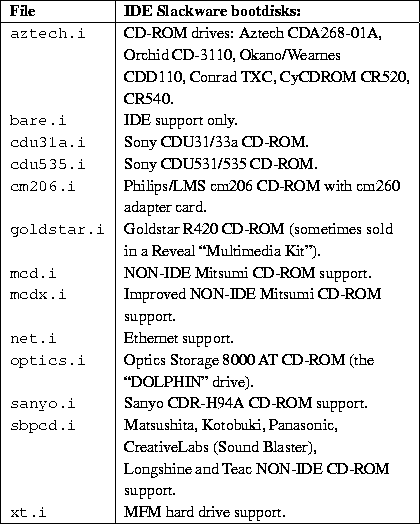
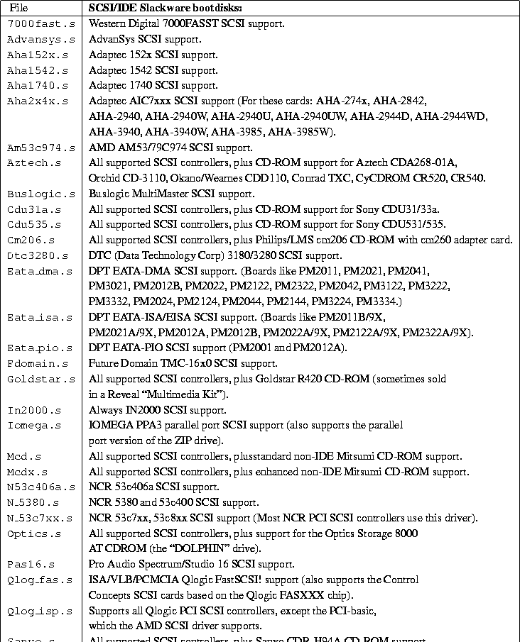
Here's the big anticlimax. After all of this planning, preparation,
and partitioning, you're in the home stretch. Make sure that the boot
floppy is in the diskette drive, and restart your computer. Now is a
good time to go get some coffee (or whatever you like to keep you
company) and return to the machine ready to play the part of a
button-pushing drone, answering yes-no questions for an hour or so.
Log in as root (no password) and type setup
or setup.tty.
Slackware comes with two versions of an excellent setup program.
One is a colorful, dialog-based, menu-driven version. An alternative,
setup.tty, is a text-only version that you may actually prefer,
because detailed diagnostics and error messages stay on the screen and
are not covered up by the next dialog box. If you're attempting a
Slackware installation on sketchy hardware, I strongly recommend the
less colorful setup.tty routine. If you don't know much about
UNIX and would feel more comfortable with an attractive, ``clean''
interface to the same process, then by all means go for the beautiful
setup.
Transferring Slackware onto your system from here should involve
little more than selecting what you want from the menus. By filling
out Section 3 of the worksheet in advance, you should be able progress
quickly through each menu in order, until you reach the INSTALL
option, at which point things may s l o w down: you are advised to
select the PROMPT feature and read about each software package,
deciding whether or not you'd like it to end up on your Slackware
system. The last part of a regular setup is the CONFIGURE section on
the setup menu, and the questions you must answer bear a striking
resemblance to the second half of the Section 3 worksheet.
Definitely not! At this point, you either have some annoying
obstacle that is preventing the setup from completing, or more
likely, you're looking at the root prompt
Well, if you're plagued by problems, you'll want to proceed directly
to the next section on troubleshooting. If things appear to be in
working order, you've still got some details to attend to. It's sort
of like purchasing a new automobile--after you select and pay for a
car, there are still some things that you need before you can drive it
with confidence--insurance, a steering wheel club, and perhaps some
luxuries that make the driving experience closer to Fahrvergnügen
than FAQ!
Not every Slackware installation is born on cue to expecting system
administrators. I've pulled a few all-nighters, sitting down after
work one evening to upgrade a Slackware box and still there struggling
to get the damn thing back online at dawn, before people start
bitching about their missing mail and news. This section will
look at a few common Slackware setup problems, solutions, and
where to look for additional assistance.
Patrick Volkerding, the father of Slackware, has dealt with many
questions of new users by listening, answering, and anticipating
repeat queries. To catch the new Slackware users before they ask the
same question for the 5,000th time, Patrick has kindly created
documentation and included it with the Slackware distribution. Three
files that you may find very helpful in answering your initial
questions are FAQ.TXT, INSTALL.TXT, and BOOTING.TXT.
The easiest way to access finding Linux documents in general is the
Linux Documentation Project Home Page. See
page
At this time, the Slackware-specific help you'll find on the Internet
tends to be highly customized--like how to NFS-mount the distribution
on computers within a certain university or how to wire your dorm
room into a particular residential WAN using Slackware.
The comp.os.linux.* hierarchy of Usenet is a
treasure trove of Linux information, not necessarily Slackware-specific.
At present, 11 separate Linux forums handle a high volume of discussion
in this hierarchy, which is described on page
At this time, there are no electronic mail discussions devoted to
Slackware per se. You can participate in some excellent
Linux-related talk via e-mail, try http://www.linux.org, and ask
in the Usenet newsgroups for a few good subscription lists.
There is a general Linux mailing list server,
majordomo@vger.rutgers.edu. See
page
Commercial support for Linux is available from some of the CD-ROM
vendors and a long list of Linux Consultants, who can be contacted
through the Linux Commercial and Consultants HOWTO documents:
Don't rest on your laurels quite yet, especially if your Slackware
machine is a shared computer or lives in a networked environment.
Grooming a computer for community and network use is a bit more
demanding than just running the setup program and then forgetting
about it. We'll leave you with a few pointers to securing and sharing
your new Slackware system.
I know you just sat through what may have been a long and perplexing
installation session. But before you move into the house you just
built, consider tearing it down and starting over again. Friedrich
Nietzsche had a quote:
If, in the process of installing the system, you had some thoughts
about how you might do it differently, now is the time. If your
Slackware Linux box will be a multi-user machine or a network
server, there may never be such a convenient opportunity to re-install
or reconfigure the system in radical ways.
Out of the box, Slackware is an insecure system. Although Patrick
Volkerding does his best to create a secure distribution, a few
inevitable holes become known, and patches or workarounds are made
available in the system administration (and cracker) communities. If
you installed Slackware from a network source like a NFS-mounted
drive, you should temporarily disconnect your box from the LAN after a
successful installation, while you plug a few holes.
By default, a new Slackware box will not require a password for
the root user. When you're comfortable that your
new Slackware system is stable (after a few hours, not days or
weeks), add a password to protect the root account.
Login as root and type:
On large, shared systems, the super-user root account is not used
as a working login account by any individual. If you're
interested in system administration or are running a networked
machine, this is a good precedent to follow. Use the
/sbin/adduser program and make yourself a login account,
rather than working out of the root login. I always smile when I
see students and hobbyists posting proudly to the Usenet as
root@mymachine.mydomain. Be humble and safe: create another
login account for your daily work and use su (rather than
login) to enter the root account sparingly.
Read Chapter 4 for a discussion of what you should
do with the root account (or shouldn't).
Not only is it uncommon to work as the root user, it is not
considered secure to login as root across the network.
Administrative users usually connect to a UNIX box as their regular,
user-name login, then su to root as needed. To
prevent crackers, hackers, and ignorant users from logging in directly
as root, edit the file
/etc/securetty and comment out (prepend a pound (#) sign
before) all but the local terminals:
After this fix, users who attempt to login in as root across
the network will be denied:
Slackware installs itself with some very real security problems.
Rather than master UNIX security and sleuth out these vulnerabilities
yourself, you can jump start the hole-patching process by visiting
a Web resource maintained for just this purpose, called Slackware
SimpleFixes:
As an actively maintained Linux distribution, Slackware updates
and patches are available from:
You might like to subscribe to one or more electronic mailing lists
that alert users to issues in Linux administration, such as:
Like how things are running? Save it for a rainy day by backing
up. Amanda (the Advanced Maryland Automatic Network Disk Archiver)
is one of several backup options for Linux installations. You
can learn more about Amanda from:
This section on S.u.S.E. Linux was written by Larry Ayers.
The SuSE distribution began a few years ago as an adaptation of
Slackware. Patrick Volkerding of Slackware helped the SuSE
developers at first, but before too long, the distribution began to
assume an identity of its own. Several new features intended to aid
the first-time user increase the probability an installation
won't need to be immediately redone. Given the cross-pollination
endemic in the free software world, I wouldn't be surprised to
learn some of these features have shown up in newer Slackware
releases.
When booting your machine from the single installation disk, you are
really booting a miniature Linux system designed for this purpose. A
colored screen appears, ready to ask a series of questions which with
any luck will guide you through the process. YAST (Yet Another Set-up
Tool) shows its Slackware ancestry inasmuch as it uses the
dialog program. This tool enables shell scripts to present dialog
boxes, radio buttons, and check lists which allow a user to make
choices and direct the course of an installation.
While no distribution can guarantee a painless installation, the
developers at S.u.S.E. GmbH have managed to anticipate several problems that
new Linux users are liable to have. One of the more frustrating
problems is finding that your CD-ROM drive isn't recognized. Copying
the packages needed to get started to a hard drive and installing them
from there is a solution, but it's awkward and time-consuming. Rather
than provide a selection of several disk images, one of which probably
has the CD-ROM drive support you need, the single S.u.S.E. boot disk
contains a small, basic kernel with all drivers available-if
needed-in the form of modules. The kernel daemon is a background
process which ensures the relevant module will be loaded if a modular
function is needed. This helps to eliminate one stumbling block.
Another common trap is underestimating the disk space which you need.
This forces the installation to abort itself due to lack of room. When
this happens, the crucial final steps (like LILO installation)
haven't yet been reached, and starting over is usually necessary.
Script-based installations are necessarily sequential in nature; you
may know that skipping one step won't hurt anything, but it's hard to
anticipate every eventuality in a shell script, and if things go awry
the script usually aborts.
During the S.u.S.E. installation, a running tally of partition space
remaining is displayed on the YAST screen; while selecting packages,
you can try various combinations while keeping in mind how much free
disk space you would prefer to remain free. Partitioning and
formatting disks, as well as creation and activation of a swap
partition, are processes that aren't much different than in other
distributions. They all use the same underlying tools; the procedure
has become more or less standardized.
The use of dependencies, which consist of information included
in a software package concerning what other packages are necessary for
it to run, has spread rapidly among Linux distributions.
Unfortunately no universal format for dependencies has arisen. Each
distribution uses a different format. Redhat's RPM format, used in
several distributions, is powerful and effective, but it has a few
drawbacks. It works best on an all-RPM system, as the dependency
checking done by the RPM program only knows about RPM
packages. S.u.S.E. 5.1 uses srpm-format. The dependencies are
only checked if a package is installed from within the YAST program,
allowing the option (for a skilled user) of unarchiving a package in
another location, then checking out the files and configuration before
final installation. Dependencies are most useful during the initial
setup and while becoming familiar with a new installation. Once
you've used the system for a while, you'll have an idea of what
libraries and programs are available. Most software packages for Linux
also contain information as to what needs to be present on a system in
order for the package to function. It is wise to read through the
entire rc.config file before running SuSEconfig and
committing any changes you may have made. Some of the default actions
the script will take you may prefer to handle yourself, but they are
easily disabled by editing the file.
Users familiar with the Slackware layout of initialization files
will need to make some adjustments; the files usually found in
/etc/rc.d are instead in /sbin/init.d.
YAST is also intended to be used after installation for routine system
maintenance. The multiplicity of resource files necessary for Linux to
boot and run can be bewildering to beginners. YAST offers a
menu-driven interface to these files, including the sendmail
configuration file, the cron (scheduling) files, initialization
scripts, and various networking files. The changes made within the
YAST session are written to a single file in the /etc directory,
rc.config, which can also be edited directly. These changes are
then written to the various ``real'' configuration files by a script
called SuSEconfig. This script is automatically run by YAST at
the end of a YAST session; if /etc/rc.config is edited directly,
SuSEconfig must be started manually. This sounds like a
complicated procedure, but it's much easier than tracking down the
individual files, learning the correct syntax needed to edit them, and
making them do what you want.
After you have S.u.S.E. Linux up and running, it's a good idea to
install the kernel source (available on the CD-ROM, it's an optional
package which can be installed during initial
set-up). S.u.S.E. installs a generic kernel, and you probably need
only a few of of the accompanying modules. This is an excellent
opportunity to familiarize yourself with the mechanics of source code
compilation, and you'll end up with a smaller customized kernel with
only the capabilities you need. The gcc compiler and
accompanying tools must be installed in order to compile a kernel;
these tools are a near-necessity on a Linux system even if you're not
a programmer. The YAST dependency checking will help insure that all
of the required compilation tools are installed.
Kernel compilation can seem daunting to a beginner, but it is a fairly
intuitive process. Three interfaces are available for the initial
configuration step. The first (and oldest) is a console-mode script
invoked via the command make config. This script asks a series
of questions and uses the results to write a file which guides the
compiler in its work. You need to know some basic facts about your
hardware such as what type of hard disk and CD-ROM drive you have. If
you want sound support you'll need to know the IRQ your card uses, as
well as a few other parameters that can be gathered from the card's
manual or the output of the MS-DOS msd utility.
The other two interfaces are menuconfig and xconfig. The
first uses a modified version of the dialog program mentioned
above, which runs on a virtual console or a xterm and resembles
the YAST setup tool. xconfig is a Tk-based version, designed to
run in a X window. All three accomplish the same task. The latter two
let you make choices without typing much. The kernel sources are
well-documented. The README file in the top-level directory
contains enough information to nearly guarantee a successful build.
Successfully configuring the X Window System (specifically XFree86,
which is included with S.u.S.E. and most other distributions) can be a
stumbling block. There is such a multiplicity of monitors and video
cards that each installation of X must be individually configured. The
difficulty has been eased somewhat with the release of XFree86 3.2,
which is included with the most recent S.u.S.E. release. A
dialog based configuration tool can now be used in place of the
previous xf86config. Both are based on shell scripts similar to
the one that is used to configure the Linux kernel. Nonetheless, you
will still need to know your monitor's horizontal and vertical refresh
rates as well as the chip set installed on your video card. It helps to
initially set your sites low, i.e., get X functioning at a low
resolution first before attempting to make full use of your video
card's capabilities.
The S.u.S.E. developers have taken some pains in configuring the
various window managers, for example, fvwm95. The first time you
start X, many of the applications you elected for installation will be
available from the mouse activated root window menu. Another entry on
the menu allows you to change the window background.
Many well-designed icons are supplied with the S.u.S.E.
distribution. This gives new users something of a reprieve. After
getting Linux and X running finally, there is enough to do just
learning the system without feeling compelled to customize the
environment, in order to make it tolerable to view!
The minute you finish installing even the most up-to-date
distribution, it begins to incrementally become outdated. This is a
slow process, but eventually you will feel the need to upgrade some
part of the system. with S.u.S.E. 5.1, YaST can now update via ftp.
At this point it's a good idea to explain how to reboot and shutdown
the system as you're using it. You should never reboot or shutdown
your Linux system by pressing the reset switch.
You shouldn't simply switch off the power, either. As with most UNIX
systems, Linux caches disk writes in memory. Therefore, if you
suddenly reboot the system without shutting down ``cleanly'', you can
corrupt the data on your drives, causing untold damage.
The easiest way to shut down the system is with the shutdown command.
As an example, to shutdown and reboot the system immediately, use the
following command as root:
Note, however, that many Linux distributions do not provide the
shutdown command on the installation media. This means that the first
time you reboot your system after installation, you may need to use
the Ctrl-Alt-Del combination.
After you have a chance to explore and use the system, there are
several configuration chores that you should undertake. The first is
to create a user account for yourself (and, optionally, any other
users that might have access to the system). Creating user accounts is
described in Chapter 4. Usually, all that you have
to do is login as root, and run the adduser (sometimes
useradd) program. This leads you through several prompts to
create new user accounts.
If you create more than one filesystem for Linux, or if you're using a
swap partition, you may need to edit the file /etc/fstab in
order for those filesystems to be available automatically after
rebooting. If you're using a separate filesystem for /usr, and
none of the files that should be in /usr appear to be present,
you may simply need to mount that filesystem. See
page
Almost everyone runs into some kind of snag or hangup when attempting
to install Linux the first time. Most of the time, the problem is caused
by a simple misunderstanding. Sometimes, however, it can be something
more serious, like an oversight by one of the developers, or a bug.
If your installation
appears to be successful, but you received unexpected error messages,
these are described here as well.
When attempting to boot the installation media for the first time, you
may encounter a number of problems. These are listed below.
Note that the following problems are not related to booting your
newly installed Linux system. See page
The most popular
cause for this kind of problem is a corrupt boot floppy. Either the
floppy is physically damaged, in which case you should re-create the
disk with a brand new floppy, or the data on the floppy is bad,
in which case you should verify that you downloaded and transferred the
data to the floppy correctly. In many cases, simply re-creating the boot
floppy will solve your problems. Retrace your steps and try again.
If you received your boot floppy from a mail order vendor or some other
distributor, instead of downloading and creating it yourself, contact the
distributor and ask for a new boot floppy--but only after verifying that
this is indeed the problem.
After the installation media boots, you will see a number of messages
from the kernel itself, indicating which devices were detected and
configured. After this, you will usually be presented with a login
prompt, allowing you to proceed with installation (some distributions
instead drop you right into an installation program of some kind). The
system may appear to hang during several of these steps. Be patient:
loading software from floppy is comparatively slow. In many cases, the
system has not hung at all but is merely taking a long time. Verify
that there is no drive or system activity for at least several minutes
before assuming that the system is hung.
Any of the above items may be the source of your problem. However,
it is possible that
the system actually may hang while booting, which can be due
to several causes. First of all, you may not have enough available RAM
to boot the installation media. (See the following item for information
on disabling the ramdisk to free up memory.)
The cause of many system hangs is hardware incompatibility. The last
chapter presented an overview of supported hardware under Linux. Even
if your hardware is supported, you may run into problems with
incompatible hardware configurations which are causing the system to
hang. See page
This item deals with the amount of RAM that you have available. On
systems with 4 megabytes of RAM or less, you may run into trouble
booting the installation media or installing the software itself. This
is because many distributions use a RAM disk, a file system loaded
directly into RAM, for operations while using the installation media.
The entire image of the installation boot floppy, for example, may be
loaded into a RAM disk, which may require more than a megabyte of RAM.
You may not see an ``out of memory'' error when attempting to boot or install
the software; instead, the system may unexpectedly hang, or
fail to boot. If your system hangs, and none of the
explanations in the previous section seem to be the cause, try disabling
the ramdisk. See your distribution's documentation for details.
Keep in mind that Linux itself requires at least 2 megabytes of RAM to
run at all; most modern distributions of Linux require 4 megabytes or
more.
This is an indication that your installation bootup media is
corrupt. If you try to boot from the installation media (and you're
sure that you're doing everything correctly), you should not see any
errors like this. Contact the distributor of your Linux software and
find out about the problem, and perhaps obtain another copy of the
boot media if necessary. If you downloaded the boot disk yourself, try
re-creating it and see if this solves the problem.
This error message means that the root file system (found on the boot
media itself), could not be found. This means that either your boot
media is corrupt in some way, or that you are
not booting the system correctly.
For example, many CD-ROM distributions require that you have the
CD-ROM in the drive when booting. Be sure that the CD-ROM drive is on
and check for any activity. It's also possible that the system is not
locating your CD-ROM drive at boot time; see
page
The most common form of problem when attempting to install or use Linux
is an incompatibility with hardware. Even if all of your hardware is supported
by Linux, a misconfiguration or hardware conflict can sometimes cause
strange results--your devices may not be detected at boot time, or
the system may hang.
It is important to isolate these hardware problems if you suspect
that they may be the source of your trouble.
If you experience a problem that you believe to be hardware-related,
the first thing that you should to do is attempt to isolate the problem.
This means eliminating all possible variables and (usually) taking the
system apart, piece-by-piece, until the offending piece of hardware is
isolated.
This is not as frightening as it may sound. Basically, you should
remove all nonessential hardware from your system, and then determine
which device is causing the trouble--possibly by reinserting each
device, one at a time. This means that you should remove all hardware
other than the floppy and video controllers, and of course the
keyboard. Even innocent-looking devices such as mouse controllers can
wreak unknown havoc on your peace of mind unless you consider them
nonessential.
For example, let's say that the system hangs during the Ethernet board
detection sequence at boot time. You might hypothesize that there is a
conflict or problem with the Ethernet board in your machine. The quick
and easy way to find out is to pull the Ethernet board, and try
booting again. If everything goes well, then you know that either (a)
the Ethernet board is not supported by Linux (see
page
``Address or IRQ conflict?'' What on earth does that mean?
All devices in your machine use an IRQ, or
interrupt request line, to tell the system that they need something
done on their behalf. You can think of the IRQ as a cord that the device
tugs when it needs the system to take care of some pending request.
If more than one
device is tugging on the same cord, the kernel won't be able to detemine
which device it needs to service. Instant mayhem.
Therefore, be sure that all of your installed devices use unique IRQ
lines. In general, the IRQ for a device can be set by jumpers on the
card; see the documentation for the particular device for details.
Some devices do not require the use of an IRQ at all, but it is
suggested that you configure them to use one if possible. (The Seagate
ST01 and ST02 SCSI controllers are good examples).
In some cases, the kernel provided on your installation media is configured
to use certain IRQs for certain devices. For example, on some distributions
of Linux, the kernel is preconfigured to use IRQ 5 for the TMC-950 SCSI
controller, the Mitsumi CD-ROM controller, and the bus mouse driver.
If you want to use two or more of these devices, you'll need to first
install Linux with only one of these devices enabled, then recompile the
kernel in order to change the default IRQ for one of them.
(See Chapter 4 for information
on recompiling the kernel.)
Another area where hardware conflicts can arise is with DMA (direct
memory access) channels, I/O addresses, and shared memory addresses.
All of these terms describe mechanisms through which the system interfaces
with hardware devices. Some Ethernet boards, for example, use a shared memory
address as well as an IRQ to interface with the system. If any of these
are in conflict with other devices, then the system may behave unexpectedly.
You should be able to change the DMA channel, I/O or shared
memory addresses for your various devices with jumper settings. (Unfortunately,
some devices don't allow you to change these settings.)
The documentation for various hardware devices should specify the IRQ,
DMA channel, I/O address, or shared memory address that the devices
use, and how to configure them. Again, the simple way to get around
these problems is to temporarily disable the conflicting devices until
you have time to determine the cause of the problem.
The table below is a list of IRQ and DMA channels used by various
``standard'' devices on most systems. Almost all systems have some of
these devices, so you should avoid setting the IRQ or DMA of other
devices in conflict with these values.
When Linux boots, you should see a series of messages on your screen such
as:
There are several things that can cause this to happen:
Refer to the documentation for your hard drive and/or controller. In
particular, many hard drives need to have a jumper set to be used as a
slave drive (the second device on either the primary or secondary IDE
bus). The acid test of this kind of condition is to boot MS-DOS or
some other operating system that is known to work with your drive and
controller. If you can access the drive and controller from another
operating system, then it is not a problem with your hardware
configuration.
See page
Most distributions provide a bootup option to specify the
drive geometry. In general, when booting the installation
media, you can specify the drive geometry at the LILO boot prompt with
a command such as:
After installing Linux, you will be able to install LILO, allowing you
to boot from the hard drive. At that time, you can specify the drive
geometry to LILO, making it unnecessary to enter the drive geometry
each time you boot. See Chapter 4 for more
information about LILO.
Presented here are some of the most common problems with SCSI
controllers and devices like CD-ROMs, hard drives, and tape drives. If
you have problems getting Linux to recognize your drive or controller,
read on.
The Linux SCSI HOWTO (see Appendix A) contains much useful
information on SCSI devices in addition to that listed here. SCSI can be
particularly tricky to configure at times.
If your SCSI controller is not recognized, you may need to
force hardware detection at boot time. This is particularly important for
BIOS-less SCSI controllers. Most distributions allow you to
specify the controller IRQ and shared memory address when booting the
installation media. For example, if you are using a TMC-8xx controller,
you may be able to enter
Actually installing the Linux software should be quite trouble-free,
if you're lucky. The only problems that you might experience would be
related to corrupt installation media or lack of space on your Linux
filesystems. Here is a list of these common problems.
If you use a CD-ROM, be sure to check the disc for scratches, dust, or
other problems that may cause media errors.
The cause of the problem may be that the media is in the incorrect
format. Many Linux distributions require that the floppies be
formatted in high-density MS-DOS format. (The boot floppy is the
exception; it is not in MS-DOS format in most cases.) If all else
fails, either obtain a new set of floppies, or recreate the floppies
(using new diskettes) if you downloaded the software yourself.
The solution is usually to re-create your file systems (with
mke2fs) which deletes the partially installed software. You can
attempt to re-install the software, this time selecting a smaller
amount of software to install. In other cases, you may need to start
completely from scratch, and rethink your partition and filesystem
sizes.
If you have other strange errors when installing Linux (especially if you
downloaded the software yourself), be sure that you actually obtained all
of the necessary files when downloading. For example, some people use the
FTP command
The best advice is to retrace your steps when something goes
wrong. You may think that you have done everything correctly, when in
fact you forgot a small but important step somewhere along the way. In
many cases, re-downloading and re-installing the software can solve
the problem. Don't beat your head against the wall any longer than you
have to!
Also, if Linux unexpectedly hangs during installation, there may be a
hardware problem of some kind. See
page
You've spent an entire afternoon installing Linux. In order to make space
for it, you wiped your MS-DOS and OS/2 partitions, and tearfully
deleted your copies of SimCity and Wing Commander.
You reboot the
system, and nothing happens. Or, even worse, something happens, but
it's not what should happen. What do you do?
On page
If you use a floppy to boot Linux, you may need to specify
the location of your Linux root partition at boot time. This is
especially true if you are using the original installation floppy itself,
and not a custom boot floppy that was created during installation.
While booting the floppy, hold down Shift or Ctrl. This should
present you with a boot menu. Press Tab to see a list of available
options. For example, many distributions allow you to type
If you opted to install LILO instead of creating a boot floppy, you
should be able to boot Linux from the hard drive. However, the
automated LILO installation procedure used by many distributions is
not always perfect. It may make incorrect assumptions about your
partition layout, and you will need to re-install LILO to get
everything correct. LILO installation is covered in
Chapter 4.
Another command to try (with MS-DOS 5.0 and higher) is
On the other hand, if you did install LILO, and another
operating system boots instead of Linux, then you have LILO configured
to boot that other operating system by default. While the system is
booting, hold down Shift or Ctrl, and press Tab at
the boot prompt. This should present you with a list of possible
operating systems to boot; select the appropriate option (usually
``linux'') to boot Linux.
If you wish to select Linux as the default operating system, you must
re-install LILO. See Chapter 4.
It may also be possible that you attempted to install LILO, but the
installation procedure failed in some way. See the previous item.
After booting Linux, you should be presented with a login
prompt, like
Most newly installed Linux systems should not require
a password for the initial log in. However, if you are asked to enter a
password, there may be a problem. First, try using a password equivalent
to the username; that is, if you are logging in as root, use
``root'' as the password.
If you simply can't log in, there may be a problem. First, consult your
distribution's documentation; the user name and password to use may be
buried in there somewhere. The user name and password may have been
given to you during the installation procedure, or they may be printed
on the login banner.
One cause may be a problem with installing the Linux login
program and initialization files. You may need to reinstall (at least
parts of) the Linux software, or boot your installation media and
attempt to fix the problem by hand--see Chapter 4 for
hints.
If logging in is successful, you should be presented with a shell
prompt (like ``#'' or ``$'') and can happily roam
around your system. However, there are some initial problems with
using the system that sometimes creep up.
The most common initial configuration problem is incorrect file or directory
permissions. This can cause the error message
In many cases, it's a simple matter of using chmod to fix the
permissions of the appropriate files or directories. For example,
some distributions of Linux once used the (incorrect) file mode 0644
for the root directory (/). The fix was to issue the command
As you use the system, you may run into places where file and directory
permissions are incorrect, or software does not work as configured. Welcome
to the world of Linux! While most distributions are quite trouble-free,
very few of them are perfect.
We don't want to cover all of those problems here.
Instead, throughout the book we help you to solve many of these configuration
problems by teaching you how to find them and fix them yourself. In
Chapter 1 we discussed this philosophy in some detail.
In Chapter 4, we give hints
for fixing many of these common configuration problems.
we'll show you how.)
2.3 Debian GNU/Linux.
2.3.1 Debian GNU/Linux installation features.
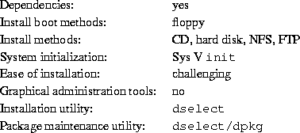2.3.2 Getting floppy images.
.
Table 2.1: Debian GNU/Linux archive structure.
Table 2.2: Debian GNU/Linux installation floppies.
and write the images to
floppy as described on page .
2.3.3 Downloading the packages.
describes the fields and
their possible values. It should give you an idea of how to build your
personal download list. When you have the list of the packages you
want, you need to decide how to download them. If you are an
experienced user, you may want to download the netbase
package--and SLIP and PPP, if necessary--so you can download
packages later, via Linux. Otherwise, you can download all of the
packages with your current operating system and install them later
from a mounted partition.
2.3.4 Booting from floppies and installing Debian GNU/Linux.
The Rescue floppy.
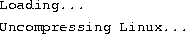
then there is a page or so of cryptic information about the hardware
in the system. There may be many messages in the form of, ``can't
find something,'' ``something not present,''
``can't initialize something,'' or even ``this
driver release depends on something,'' Most of these are
harmless. The installation boot disk is built to run on computers with
many different peripheral devices. Obviously, no computer will have
every possible peripheral device, and the operating system may emit a
few complaints while it looks for peripherals you don't own. You may
also see the system pause for a while. This happens if it is waiting
for a device to respond that is not present on your system. If you
find that the time it takes to boot the system unacceptably long, you
can create a custom kernel after you install the system which doesn't
have the drivers for non-existent devices.
Low memory systems.
for assistance.
The color or monochrome dialog box.
The Main Menu
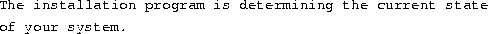
On some systems, this message flashes by too quickly to read. It is
displayed between steps in the installation process. The installation
program checks the state of the system after each step. This allows
you to restart the installation without losing the work that you have
already done, if you halt the system in the middle of the
installation. If you need to restart an installation, you will be
prompted to select color or monochrome again, configure the keyboard,
reactivate the swap partition, and remount any disks that have been
initialized. Any other installation on the system will be saved.
Configuring the keyboard.
The shell.
Partition your hard disks.

If you have already created at least one Linux Native and
one Linux Swap disk partition, the Next menu selection will be
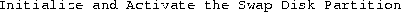
or you may even skip that step if your system has little RAM and the
installation software asked you to activate the swap partition as soon
as the system started. Whatever the Next menu selection is, you can
use the down-arrow key to select

), which allows you to create and edit
disk partitions. You must create at least one Linux (type 83) disk
partition.
Initialize and Activate the Swap Disk Partition.
Initialize a Linux disk partition.
If it isn't, you haven't completed the disk partitioning process, or
you haven't made one of the menu choices dealing with your swap
partition.
Install the base system.
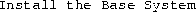
unless you already performed some of the installation steps. You can
use the arrow keys to select the menu items to initialize or mount
disk partitions if you have additional partitions to set up. If you
have created separate partitions for /var, /usr, or other
file systems, you should initialize and mount them now.
Install the operating system kernel.
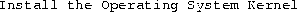
Select it, and you will be prompted to select a floppy drive and
insert the Rescue floppy. This copies the kernel onto the hard
disk. This kernel is used later to create a custom boot floppy for
your system and make the hard disk bootable without a floppy.
Install the device drivers.
menu item and look for devices which are on your system. Configure
those device drivers, so they will be loaded whenever your system
boots.
Configure the base system.
This asks you to select your time zone. Look for your time zone or
region of the world in the menu, and type it at the prompt. This may
lead to another menu where you can select more specific information.
Configure the network.
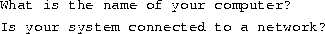
If you are connected to a network, check with your system
administrator or ISP vendor if you don't know the following
information:
Make the hard disk bootable.
Make a boot floppy.
from the menu and feed the system a blank floppy as directed. Make
sure that the floppy isn't write protected. The software attempts to
format and write it. Mark this diskette the ``Custom Boot'' floppy and
write-protect it once it has been written.
The moment of truth.
from the menu. If the Linux system doesn't start up, insert the Custom
Boot floppy you created in the previous step and reset the
system. Linux should boot. You should see the same messages as when
you first booted the installation boot floppy, followed by some new
messages.
Add a user account and password.
. If you
have a CD-ROM or hard disk with the additional Debian packages or are
connected to the Internet, you may want to read that section now.
Otherwise, exit dselect. You can use the package management
software after you have transferred the Debian package files to your
system.
Log in.
2.3.5 Running Debian GNU/Linux.
.
Table 2.3: Fields in a Debian/GNU Linux Packages file record.
Package classifications.
Required.
Important.
Standard.
Optional.
Extra
Package relationships.
2.3.6 dselect.
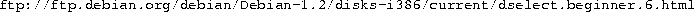
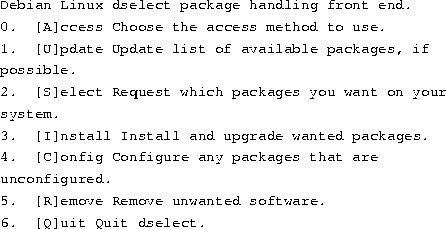
Access.
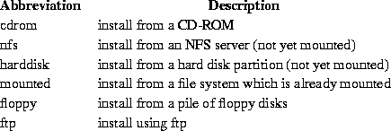
Update.
Select.
Install
Configure.
Remove.
Quit.
2.3.7 dpkg.
Installing or updating new or existing packages.
where filename is the name of the file containing a Debian
package, like tcsh_6.06-11_i386.deb. dpkg is partly
interactive; during the installation it may ask additional questions,
like whether to install the new version of a configuration file or
keep the old version.
Configuring installed packages.
where package is the name of the package, like
tcsh. (Notice that this is not the original name of the file from
which tcsh was installed, which was longer, included a version
number, and ended in .deb.)
Removing installed packages.
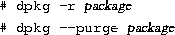
If there are any installed packages that depend on the one you wish to
remove, the package will not be removed, and dpkg will
abort with an error message.
Reporting package status.
Listing available packages.
where package-name-pattern is an optional argument specifying a
pattern for the package names to match, like *sh. Normal
shell wildcards are allowed. If you don't specify the pattern, all of
the installed packages are listed.
Listing files owned by packages.
However, this does not list files created by package-specific
installation scripts.
Finding the package that owns a file.

where filename-pattern is the pattern with which to search the
package names for a match. Again, normal shell wildcards are allowed.
Summary.
2.3.8 About Debian GNU/Linux.
Software in the Public Interest
P.O. Box 70152
Pt. Richmond, CA 94807-0152
2.3.9 Mailing lists.
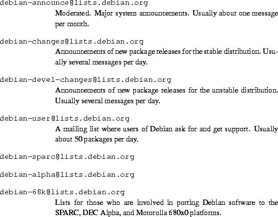
2.3.10 Bug tracking system.
2.3.11 Debian Acknowledgments.
2.3.12 Last note.
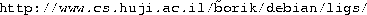
2.4 Red Hat Linux.
2.4.1 Red Hat Linux installation features.
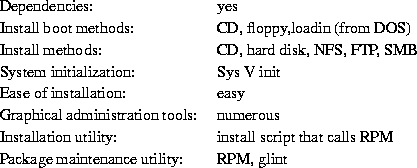2.4.2 The RPM package management system.
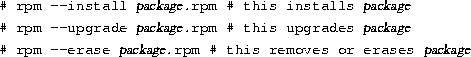Package naming conventions.
2.4.3 A note about upgrading Red Hat Linux.
2.4.4 Creating the installation floppies.
or in the
images directory of a Red Hat CD-ROM.
or in the images directory of a Red Hat CD-ROM. This diskette
is required if your method of installation is not CD-ROM based, or you
need PCMCIA support for any device, like a CD-ROM on a laptop, to
install properly. This diskette can also be used with the Boot
diskette as an emergency start disk for an installed system.
or
in the DOS directory of a Red Hat CD-ROM.
and unzip the files into: C:FIPS
if you need to free space on your hard drive.
2.4.5 Installation media.
, insure that your
installation method is properly set up for the Red Hat installation
diskettes. For CD-ROM, NFS, FTP, and hard drive installation methods,
the source must have the directory /RedHat on the ``top level''
with the directories /base and /RPMS underneath:
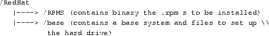NFS installation.
Hard drive installation.
\RedHat should be
C:\RedHat. On a MS-DOS file system, it does not matter that
the package.rpm names are truncated. All you need to
do is make sure the \RedHat\base directory
contains the base files from a CD-ROM or FTP site and the
\RedHat\RPMS directory contains all of the
package.rpm files from the CD-ROM or FTP site. Then
you can install or upgrade from that partition. If you have an
existing Linux partition that is not needed for an installation or
upgrade, you can set it up as outlined here and use it.
FTP installation.
2.4.6 Customizing your NFS or hard drive installation.
The comps file.
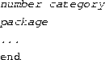
or one of Red Hat's mirror sites for the original package found in the
distribution's original /RedHat/RPMS directory. The
installation program is relatively version-insensitive. The only
warning here is to insure that package dependencies are met. When an
RPM package is built, RPM itself tries to determine what packages must
be installed for the package to work (the RPM developer also has
direct control of this as well--he or she can add dependencies that
RPM might not ordinarily detect). This is where a little
experimentation or research may be needed. For example, one way to
determine package dependencies (if you have user access to your NFS
server on an existing Red Hat Linux box) is to telnet or
login into it (or if you have the CD-ROM, mount it and go to the
RedHat/RPMS directory) and query the package for its
dependencies:
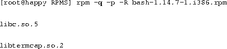
describes the
categories of software found in /base/comps in Red Hat v4.0:
Table 2.4: Important Red Hat Linux packages.
2.4.7 Recommended minimal installation.
2.4.8 How much space do you really need?
gives
approximate disk space requirements Red Hat Linux and various
subsystems.
Table 2.5: Typical Red Hat Linux disk space requirements.
2.4.9 Installation.
2.4.10 Installation media revisited.
CD-ROM installation.
Hard drive installation.
NFS installation.
This instructs the probe to look at the location specified by the
values IRQ and IO_PORT for the Ethernet card. If
your Ethernet card is configured for IRQ 11 and IO_PORT 0x300,
specify:
After the card has been successfully found, you will be prompted for
TCP/IP information about your machine and the NFS server with the
Linux installation packages. First, you will be asked to provide the target
machine's IP Address, Netmask, Default Gateway, and Primary
Name Server. For example:
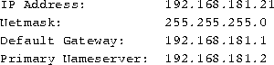
After you select OK, you are prompted for the target machine's
Domain name and Host name. For example, if your domain name
is infomagic.com and host name is vador, enter:
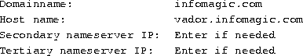
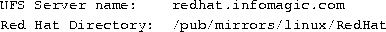
FTP installation.
2.4.11 Walking through the rest of the installation.
.
\> enter FDISK /mbr. This
allows your system to boot into an existing MS-DOS or Windows 95 system as
it did before LILO was installed. You can then use the Red Hat Boot
diskette with the following parameters at the boot: prompt to
boot your system on the hard drive:
2.4.12 After installation.
Understanding the LILO prompt.
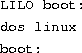
boots the system in single user mode so you can take corrective
action. This is also useful if your system doesn't boot all the way
to the login: prompt for some reason.
Logging in the first time.
2.5 Caldera OpenLinux
2.5.1 Obtaining Caldera OpenLinux.
2.5.2 Preparing to install Caldera OpenLinux.
2.5.3 Creating boot/modules floppies.
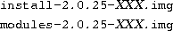
The XXX is replaced by the version number of the disk images.
At the time of writing, the current images are 034 and located in the
001 directory.
,
using the MS-DOS program RAWRITE.EXE from the
Caldera CD-ROM or dd from a Linux system.
2.5.4 Preparing the hard disks.
2.6 Slackware
2.6.1 Slackware is not for you. (Or maybe it is.)
2.6.2 A quick history.
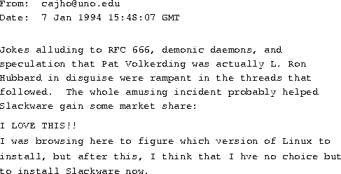
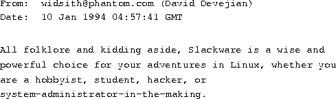2.6.3 Why, then?
2.6.4 Upgrade? Think twice!
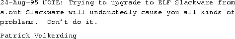
2.6.5 Select an installation method.
CD-ROM.
Party!
FTP.
NFS.
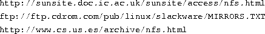Floppy.
Hard disk.
Tape.
2.6.6 Boot disks: always a good thing.
2.6.7 Slackware setup worksheet.
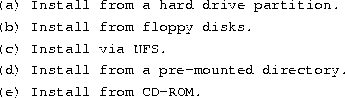
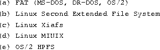
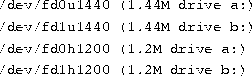
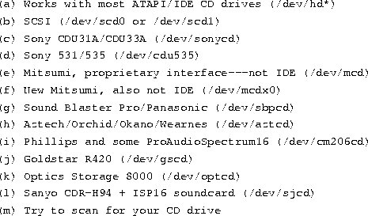
2. /dev/scd1
to run mostly from CD-ROM
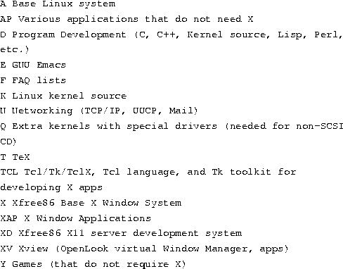
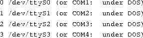
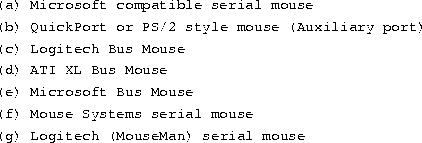
)!
2.6.8 Making Slackware happen.
2.6.9 Build some boot disks.
Choose your kernel!
provides a
quick reference of the kernel images available as we went to
press. Information and up-to-date boot disk image information is
available from this URL:
Table 2.6: Slackware IDE boot disk images.
Table 2.7: Slackware SCSI/IDE boot disk images.
2.6.10 Boot into action.
2.6.11 The Slackware setup program.
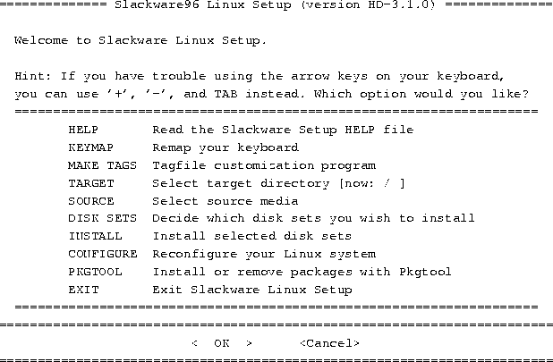
2.6.12 Is that all?
and wondering ``What Next?''
2.6.13 Troubleshooting difficult deliveries.
Slackware installation FAQs.
Web Support For Slackware.
for a description of the LDP
Home Page.
Usenet Groups For Slackware.
.
Mailing lists for Slackware.
for a description of how to
subscribe to mailing lists via this server.
You get what you pay for (commercial support).
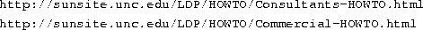2.6.14 Basking in the afterglow.
2.6.15 Consider reinstalling!
A man learns what he needs to know about building his house only
after he's finished.
2.6.16 Secure the system.
Get off the LAN at once.
Give root a password.
Give yourself an account.
Deny root logins.
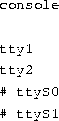
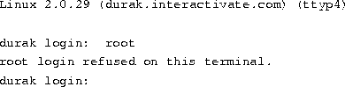Apply the simple fixes.
Check for patches on ftp.cdrom.com
Stay current.
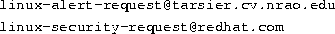2.6.16.1 Back up.
2.7 S.u.S.E.
2.7.1 Beginning the installation.
Dependencies.
S.u.S.E Post-installation.
2.7.3 Getting X up and running.
2.7.4 Later upgrades.
Post-installation procedures.
This cleanly reboots your system. The manual page for shutdown
describes the other command-line arguments that are available. Use
the command man shutdown to see the manual page for shutdown.
for a description of the
/etc/fstab file.
2.9 Running into trouble.
2.9.1 Problems with booting the installation media
for information on these kinds of pitfalls.
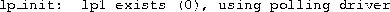
appears on your screen.
you should then login (usually as root or
install--this varies with each distribution). After entering the
user name, the system may pause for 20 seconds or more while the
installation program or shell is being loaded from floppy. Again, the
floppy drive light should be on. Don't assume that the system is
hung.
, below, for a
discussion of hardware incompatibilities.
for more information.
2.9.2 Hardware problems.
Isolating hardware problems
), or (b) there is an address or IRQ
conflict with the board.
Table 2.8: Common device settings.
Problems recognizing hard drive or controller.
Here, the kernel is detecting the various hardware devices present on your
system. At some point, you should see the line

followed by a list of recognized partitions, for example:
If, for some reason, your drives or partitions are not recognized, then
you will not be able to access them in any way.
, above, for
information on resolving possible device conflicts, and
page , below, for information
on configuring SCSI devices.
.
where cylinders, heads, and sectors correspond
to the number of cylinders, heads, and sectors per track for your hard
drive.
Problems with SCSI controllers and devices.
at the LILO boot prompt, where interrupt is the IRQ of
controller, and memory-address is the shared memory
address. Whether or not this is possible depends on the distribution
of Linux; consult your documentation for details.
2.9.3 Problems installing the software.
), or it might be a case of
poorly specified geometry. If you used the
option at boot time to force detection of your drive geometry, and
incorrectly specified the geometry, you could be prone to this problem.
This can also happen if your drive geometry is incorrectly specified in
the system CMOS.
when downloading the Linux software via FTP. This will download only those
files that contain a ``.'' in their filenames; if there are any files
without the ``.'', you will miss them. The correct command to use
in this case is
for hints.
2.9.4 Problems after installing Linux.
, we cover some of the most
common problems that can occur when booting the Linux installation
media--many of those problems may apply here. In addition, you may be
victim to one of the following maladies.
Problems booting Linux from floppy.
at the boot menu, where partition is the name of the
Linux root partition, like /dev/hda2. Consult the documentation
for your distribution for details.
Problems booting Linux from the hard drive.
This command attempts to rebuild the hard drive master boot record
for booting MS-DOS, by overwriting LILO. If you no longer have MS-DOS on your
hard drive, you need to boot Linux from floppy and
attempt to install LILO later.
Problems logging in
At this point, either the distribution's documentation or the system itself
will tell you what to do. For many distributions, you simply log in as
root, with no password. Other possible user names to try are
guest or test.
Problems using the system.
to be printed after logging in (in fact, any time you see the message
``permission denied'' you can be fairly certain that it is a problem
with file permissions).
as root. However, in order to issue this command, you needed to
boot from the installation media and mount your Linux root filesystem by
hand--a hairy task for most newcomers.


Next: 3 Linux Tutorial
Up: Linux Installation and Getting
Previous: 1 Introduction to Linux
Wed Mar 4 10:46:42 PST 1998